freiesMagazin April 2011 (ISSN 1867-7991)
Topthemen dieser Ausgabe
Debian GNU/Linux 6.0 „Squeeze“
Debian GNU/Linux bezeichnet sich als „das universelle Betriebssystem“ und ist zweifellos die größte Distribution, sowohl von der Entwickler- als auch der Anwenderzahl, die unabhängig von einem Unternehmen entwickelt wird. Debian steht auf eigenen Füßen und bildet die Basis für viele weitere Distributionen, ganz besonders Ubuntu. Mehrere sehr große Installationen wie das System der Münchner Stadtverwaltung oder das der spanischen Provinz Extremadura beruhen auf Debian. Dieser Artikel stellt Debian 6.0 „Squeeze“ mit einem Fokus auf die Neuheiten dieser Version vor. (weiterlesen)
Test: OpenDocument-Format für den Datenaustausch
Man liest ja des Öfteren in den Nachrichten, dass sich irgendeine Regierung der Welt dazu entschließt, das OpenDocument-Format (ODF) in Behörden zu akzeptieren bzw. zu nutzen. Als Vorteil von ODF wird – vor allem von Linux-Anhängern – oft genannt, dass sich das Format auf jedem Linux-Rechner öffnen lässt und immer gleich aussieht, weil es ja ein offener Standard ist. Sprich, das Problem wie bei Microsoft Office, dass ein Dokument (auch bei gleicher MS-Office-Version) auf jedem Rechner anders aussehen kann, gibt es angeblich nicht. Dieser These soll in diesem Artikel nachgegangen werden. (weiterlesen)
SpaceChem – Atome im Weltall
Chemie zählt wahrscheinlich nur bei den wenigsten Menschen zum Lieblingsfach und kommt in der Beliebtheitsskala vermutlich gleich nach Mathematik. SpaceChem versucht dennoch mit diesem Thema die Spieler zu begeistern – und das, ohne dass man es wirklich merkt. (weiterlesen)
Zum Index
Inhalt
Linux allgemein
Debian GNU/Linux 6.0 „Squeeze“
Test: OpenDocument-Format für den Datenaustausch
Der März im Kernelrückblick
Anleitungen
Eine Einführung in die Programmiersprache Pike
Software
SpaceChem – Atome im Weltall
Community
Rezension: Durchstarten mit HTML5
Rezension: Essential SQLAlchemy
Magazin
Editorial
Veranstaltungen
Vorschau
Konventionen
Impressum
Zum Index
Editorial
Willkommen im AprilAprilscherz
Manche Leser hassen uns sicherlich dafür, dass wir ebenso wie viele andere Seiten im Netz den 1. April nicht einfach unbedacht vorüberziehen lassen konnten. Die Idee für den Scherz spukte in unseren Köpfen aber schon seit letztem Jahr herum, sodass wir es diesmal einfach wahr machen mussten [1]. Wir hoffen, der Schreck war nicht zu groß, dennoch zeigt die Resonanz aber, dass es sich um ein realistisches Szenario handelt, welches in der heutigen Zeit der Abmahnanwälte schnell Wahrheit werden kann. Glücklicherweise sind die Kollegen von Freies Magazin FM5 [2] aus Österreich aber nicht so gemein wie in unserem Newsbeitrag unterstellt. Zusätzlich waren die Jungs und Mädels auch vorgewarnt, falls ein Sturm der Entrüstung unserer Leser auf sie hereinbrechen sollte. Vielen Dank also noch einmal besonders an Christian Stipkovits von FM5, dass er diesen Scherz indirekt mitgetragen hat. Wir drücken aber die Daumen und hoffen für die Zukunft, dass der Scherz niemals Wirklichkeit wird. freiesMagazin ist nun schon seit über fünf Jahren ein Begriff im Netz, sodass es schade wäre, wenn diese „Marke“ durch eine andere ersetzt werden müsste.Grafikwettbewerb zum Geburtstag
Kein Aprilscherz, da auch bereits am 18. März 2011 angekündigt [3], ist der neue Wettbewerb von freiesMagazin. Zum fünfjährigen Bestehen des Magazins, welches wir schon in der letzten Ausgabe angekündigt hatten, haben wir zu einem Grafikwettbewerb aufgerufen. Teils geschah das auch als Resonanz auf den letzten Programmierwettbewerb, da es unter unseren Lesern sicherlich auch zahlreiche Nicht-Programmierer gibt, die dafür umso besser mit einem Malstift oder Lightpen umgehen können. Die Aufgabe ist es, ein Bild zum Thema „freiesMagazin feiert 5. Geburtstag“ zu erstellen. Dies kann entweder mit Open-Source-Software wie GIMP [4] oder Inkscape [5] geschehen, aber auch das Malen mit Bleistift, Kohle oder Wasserfarben ist erlaubt. Ebenfalls liegen Stil und Interpretation der Aufgabe ganz im Ermessen jedes Teilnehmers. Es soll dabei nicht auf jedem Bild eine Torte mit fünf Kerzen abgebildet sein. Lassen Sie Ihrer Kreativität freien Lauf! Einsendeschluss für die Bilder ist Sonntag, der 24. April 2011. Alle Bilder müssen unter einer freien Lizenz bei uns eingehen. Senden Sie Ihre Bilder einfach bis zum Stichtag anSpenden für freiesMagazin
Keine Sorge, wir wollen an dieser Stelle nicht um Geld bitten, um den Anwalt des Aprilscherzes zu bezahlen. Ganz im Gegenteil erreichen uns ab und zu Leserbriefe, in denen Leser fragen, ob sie uns nicht finanziell unterstützen können. Wir freuen uns zwar darüber, müssen aber immer dankend ablehnen. Der Grund ist einfach, dass freiesMagazin zwar bei allen Beteiligten viel Zeit verschlingt, aber wenig Geld. Da unser Server freundlicherweise von x|encon [8] gesponsort wird, haben wir effektiv nur die Kosten für die Webadresse, welche über tiggersWelt.net [9] bezogen wird. (Und nein, auch aufgrund der Namensnennung erhalten wir keine Sonderkondition. ;)) Die Kosten halten sich damit glücklicherweise in Grenzen und freiesMagazin wird derzeit sicherlich nicht an übermäßigen Ausgaben zugrunde gehen. Etwas besser könnte es aber bei der Artikelflut aussehen, die monatlich leider nicht über uns hereinbricht. Wie schon die Jahre davor, nimmt die Beteiligung in den wärmeren Monaten etwas ab, was sehr verständlich ist. Wer will schon bei 20 Grad und Sonnenschein drinnen am PC in die Tasten hauen? Dennoch sind Sie, werte Leser und potentielle Autoren, immer dazu aufgerufen, neue Artikel bei uns unter[1] http://www.freiesmagazin.de/20110401-limo-neuer-name-für-das-magazin
[2] http://fm5.at/
[3] http://www.freiesmagazin.de/20110318-grafikwettbewerb-zum-fuenften-geburtstag
[4] http://www.gimp.org/
[5] http://inkscape.org/
[6] http://www.freiesmagazin.de/freiesMagazin-2010-03
[7] http://www.the-nuri.de/
[8] http://www.xencon.net/
[9] http://tiggerswelt.net/
Das Editorial kommentieren
Zum Index
Debian GNU/Linux 6.0 „Squeeze“
von Hans-Joachim Baader Debian GNU/Linux bezeichnet sich als „das universelle Betriebssystem“ und ist zweifellos die größte Distribution, sowohl von der Entwickler- als auch der Anwenderzahl, die unabhängig von einem Unternehmen entwickelt wird. Debian steht auf eigenen Füßen und bildet die Basis für viele weitere Distributionen, ganz besonders Ubuntu. Mehrere sehr große Installationen wie das System der Münchner Stadtverwaltung oder das der spanischen Provinz Extremadura beruhen auf Debian. Dieser Artikel stellt Debian 6.0 „Squeeze“ mit einem Fokus auf die Neuheiten dieser Version vor. Redaktioneller Hinweis: Der Artikel „Debian GNU/Linux 6.0 Squeeze“ erschien erstmals bei Pro-Linux [1].Vorwort
Nun macht sich bei Debian eine gewisse Monotonie breit. Die Entwickler waren übereingekommen [2], künftig alle zwei Jahre den Feature-Freeze einzuleiten, der erfahrungsgemäß ein halbes Jahr später zur Veröffentlichung einer neuen stabilen Version führt. Dabei kommt es den Entwicklern auf ein oder zwei Monate nicht an, da die Qualität über das Einhalten eines Zeitplans gestellt wird – und Qualität bedeutet nun einmal intensives Testen, das seine Zeit dauert, und das Beseitigen aller kritischen Fehler. Dennoch konnten die Entwickler die letzten Versionen fast im Zweijahrestakt veröffentlichen. So wurde auch Debian 6.0 „Squeeze“ fast genau zwei Jahre nach seinem Vorgänger „Lenny“ veröffentlicht (siehe „Debian GNU/Linux 5.0“, freiesMagazin 05/2009 [3]). Damit wird, sofern sich keine neuen Entwicklungen ergeben, der Support für Lenny im Februar 2012 eingestellt. Die Benutzer haben also noch reichlich Zeit für ein Update. Eigentlich wollte das Debian-Team die neue Version früher veröffentlichen, doch aus dem ursprünglich geplanten Freeze-Termin März 2010 [4] wurde dann August. Zwischenzeitlich gab es noch Probleme [5] mit dem grafischen Installer, doch die angedrohte Entfernung der grafischen Version konnte schließlich abgewendet werden, es stand ja noch genügend Zeit zur Verfügung. Auch sonst tat sich im vergangenen Jahr im Debian-Projekt so einiges. Die Mitgliedschaft [6] bei Debian steht nun auch Nicht-Entwicklern offen, was bereits jetzt als wichtiger Meilenstein gelten muss, der das Projekt wesentlich stärkt. Die „Archiv-Zeitmaschine“ snapshot.debian.org [7] wurde zum offiziellen Dienst von Debian, ebenso backports.debian.org [8] (früher backports.org), das aktualisierte Software für die stabile Version bereitstellt, sofern sie in Debian Testing bereits erprobt wurde. Für Anwender, denen auch das nicht aktuell genug ist, wird über stabilere Schnappschüsse von Testing nachgedacht [9]. Details dazu werden wahrscheinlich im Verlauf der Entwicklung von Debian 7.0 aufkommen; zurzeit gibt es erste Test-Schnappschüsse. Es sei angemerkt, dass es sich bei dem Artikel nicht um einen Test der Hardware-Kompatibilität handelt. Es ist bekannt, dass Linux mehr Hardware unterstützt als jedes andere Betriebssystem – und das überwiegend bereits im Standard-Lieferumfang. Ein Test ist damit überflüssig und es wäre zu viel Aufwand für wenig Nutzen, eine repräsentative Auswahl von Hardware zu beschaffen. Virtuelle Maschinen sind die einzige praktikable Möglichkeit, ein unverändertes System zu zeigen. Für den Artikel werden daher zwei identische virtuelle Maschinen, 64 Bit, unter KVM mit jeweils 768 MB RAM verwendet.Unterstützte Systeme
Anders als viele andere Distributionen beschränkt sich Debian nicht auf die x86-Architektur in ihren 32- und 64-Bit-Varianten. Auch wenn gegenüber Debian 5.0 drei veraltete Architekturen gestrichen wurden, nämlich HP-PA, Alpha und die ältere ARM-Portierung, werden immer noch SPARC, PowerPC, MIPS (in Big und Little Endian), Itanium, S/390 und ARM EABI unterstützt. Dazu kommen nun als technische Vorschau kfreefsd-amd64 und kfreefsd-i386, bei denen der Linux-Kernel durch einen FreeBSD-Kernel ersetzt wurde. Diese dürften aber nur für eine Handvoll Leute von Interesse sein. Die nicht mehr offiziellen Portierungen verschwinden allerdings keineswegs aus Debian, sondern sind nach wie vor verfügbar, allerdings muss mit Problemen gerechnet werden. Außerdem existieren weitere, noch unvollständige Portierungen. Damit unterstützt Debian fast alle Architekturen, auf denen der Linux-Kernel läuft. Prinzipiell bietet Debian Platz für jede Architektur, wenn sich Freiwillige dafür finden. Die Portierungen-Seite [10] listet sie alle auf.Neu in Debian 6.0
Zwei Drittel aller Softwarepakete von Debian 5.0 wurden in Version 6.0 aktualisiert und viele kamen neu hinzu, sodass die Gesamtzahl jetzt 29.000 Pakete übersteigt. Bedingt durch die ein halbes Jahr lange Freeze-Phase findet man in Debian kaum Software, die jünger als eben dieses halbe Jahr ist. So ist GNOME nicht in Version 2.32 [11], sondern in Version 2.30.2 [12] (mit einigen Elementen aus 2.32), und KDE nicht in Version 4.6 [13], sondern in Version 4.4.5 [14] enthalten. In vielen Fällen ist das nicht von Belang, denn die neuesten Features benötigt man nur in Ausnahmefällen, insbesondere, wenn man den Rechner hauptsächlich als zuverlässiges Arbeitsmittel ansieht. In besagten Ausnahmefällen stehen eine Reihe von Optionen zur Verfügung, dazu später mehr. Debian ist nach wie vor in Form von CD- und DVD-Images verfügbar, zudem jetzt auch als Blu-ray-Image. Man kann sich auf das erste Image der jeweiligen Serie beschränken und den Rest über das Internet nachinstallieren oder gleich auf ein kleineres Image zurückgreifen, das die Pakete weitgehend aus dem Internet bezieht. Alle Images sind hybrid, können also auch von USB-Speichern gestartet werden. Außerdem gibt es nun erstmals offizielle Live-Systeme [15]. Allein über die Live-Systeme könnte man einen eigenen Artikel verfassen: Es ist möglich, sich online ein individuelles ISO-Image erzeugen zu lassen und Dutzende von Projekten nutzen die Live-Systeme als Basis. Eine der für das Projekt wichtigsten Änderungen ist die Verschiebung von unfreien Firmware-Dateien in den „non-free“-Bereich. Da einige wichtige Hardware-Komponenten, vor allem WLAN-Adapter, ohne unfreie Firmware gar nicht und einige andere, z. B. Grafikkarten, nur teilweise nutzbar wären, gibt es im Installationsprogramm die Möglichkeit, diese Pakete zusätzlich zu installieren. Ferner gibt es Netzinstallationsimages, die die unfreie Firmware bereits enthalten. Im Endeffekt ändert sich für Benutzer nichts, aber die Trennung zwischen frei und unfrei und die Missbilligung von unfreier Firmware wird deutlicher zum Ausdruck gebracht. Interessanterweise ist jetzt wieder apt-get das empfohlene Programm für die nichtinteraktive Paketverwaltung, obwohl das zuvor empfohlene aptitude prinzipiell das Gleiche leistet. aptitude dient aber weiter zur menügeführten Paketverwaltung in der Konsole. Jetzt werden empfohlene Pakete („recommends“) in der Standardeinstellung von apt automatisch mitinstalliert, was man jedoch mit einer Option abstellen kann. Das immer noch als Init-System dienende sysvinit erhielt die Fähigkeit zu einem abhängigkeitsbasierten und parallelen Starten von Diensten und es wird bei einem Update der Distribution auch eine automatische Umstellung auf dieses System versucht. Vereinzelte nicht angepasste Startskripte können jedoch diese Umstellung verhindern. Die Tastaturkonfiguration für Konsole und X11 wurde vereinheitlicht. Das Umschalten des Grafikmodus geschieht für NVIDIA, AMD und Intel im Kernel und nicht mehr in X11. Es gibt neue Pakete für die LDAP-Authentifizierung, die einen zentralen unprivilegierten Daemon (nslcd) nutzen. Dadurch werden die Pakete, die die Authentifizierung durchführen, von direkten LDAP-Abhängigkeiten entkoppelt. Das neue Repository „squeeze-updates“ ersetzt „volatile“. Besonders erwähnt das Debian-Projekt als Neuerung die reichhaltige Unterstützung für Neurobildgebungsforschung, unter anderem mit aktueller Software für strukturelle Bilderkennung und anderen Programmen im Zusammenhang mit Magnetresonanztomographie (MRT)-Verarbeitung. Während andere Distributionen regelmäßig ihre Virtualisierungs- und Cloud-Unterstützung hervorheben, lässt Debian hierzu nichts verlauten. Eine oberflächliche Suche zeigt jedoch, dass alle relevanten Pakete sowie die Kernel-Unterstützung für KVM (und, mit separaten Paketen, Xen und OpenVZ) vorhanden sind. Da die Entwicklung in diesem Bereich rasant ist, können andere Distributionen regelmäßig neuere Versionen als Debian anbieten, doch auch hier gibt es natürlich Update-Möglichkeiten. Übrigens sollen Xen und OpenVZ ab Debian 7.0 nicht mehr offiziell unterstützt werden. Der Debian-Kernel soll dann nur noch die Virtualisierungslösungen anbieten, die im offiziellen Kernel verfügbar sind, unter anderem also KVM. Bis diese Änderung für die Benutzer von Xen und OpenVZ dringlich wird, ist es aber noch drei Jahre hin.Installation
Auch im Debian-Installer gibt es Neues, wovon allerdings in einer normalen Installation nicht so viel sichtbar ist. In einigen Dialogen kann man nun eine Hilfe abrufen, dies ist aber noch nicht durchgängig realisiert. Ein Großteil der Hardware wird automatisch erkannt und hardwarespezifische Pakete werden automatisch installiert. Neben der aktuellen Version von Debian kann man auch ältere wie Lenny installieren. Es stehen umfangreiche Installationshandbücher auf der Debian-Webseite zur Verfügung [16], für jede Architektur ein eigenes und jeweils in mehrere Sprachen übersetzt. Besucher der Webseite bekommen das Dokument automatisch in ihrer Sprache zu sehen, wenn ihr Browser korrekt eingestellt und die Sprache verfügbar ist. Man muss dieses Handbuch nicht komplett durchlesen, als Referenz kann man in Zweifelsfällen aber immer darauf zurückgreifen. Die Installation bietet schon beim Booten viele Optionen, zum Beispiel eine textbasierte und eine grafische Installation, normale oder Experteninstallation, automatische Installation, Installation einer spezifischen Desktopumgebung und noch mehr. Die Standard-Desktop-Umgebung ist GNOME. Will man eine andere Umgebung, so kann man schon im Bootmenü des Installers unter „Alternative Desktop Environments“ KDE, Xfce oder LXDE auswählen. Und wenn einem das alles nicht passt, macht man eine Minimalinstallation und erweitert diese später. 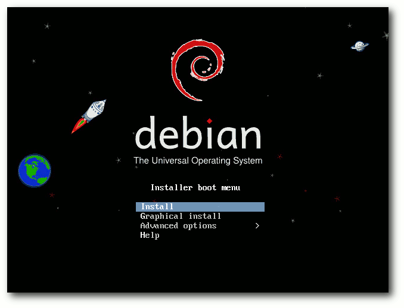Startbildschirm der Installations-CD.
Die empfohlene minimale RAM-Größe ist 512 MB, für ein System ohne Desktop 256 MB. Als Minimum gelten 128 MB für ein Desktop-System und 64 MB für ein Konsolen/Server-System. Unter Umständen kann man mit noch weniger RAM auskommen, dafür gibt es einen Low-Mem-Modus des Installers. Für ein flüssiges Arbeiten mit dem Desktop, insbesondere KDE, sind min. 768 MB besser. Für den Artikel wurde die Installation mit dem Netzwerk-Installationsimage (ca. 150 MB) getestet. Im Beispiel wurde im Bootmenü die grafische Installation und KDE gewählt. Nachdem das Installationsprogramm gestartet ist, wählt man zunächst die Sprache aus. Es werden nun 70 Sprachen unterstützt, sieben mehr als in der Vorversion. Dann wählt man den Standort (und die Zeitzone, falls das gewählte Land mehr als eine Zeitzone hat), darauf die Tastatur. Leider gibt es die Neo-Belegung (siehe „Neo – Ein ergonomisches Tastaturlayout“, freiesMagazin 05/2010 [17]) nicht in der Tastaturauswahl, dafür ist das in Deutschland kaum gebräuchliche Dvorak vorhanden. Nach dem Nachladen verschiedener Komponenten, das ein wenig dauern kann, will das System den Rechnernamen wissen, dann den Domainnamen. Findet das System bereits über DHCP diese Informationen heraus, dann entfallen diese beiden Schritte. Bevor DHCP möglich ist, kann es jedoch erforderlich sein, Firmware in die Netzwerk-Hardware zu laden. Freie Firmware bringt Debian bereits mit, doch es gibt auch Hardware, die unfreie Firmware benötigt. Da Debian diese nicht mehr mitliefert (außer auf den „non-free“-Images), ist es in solchen Fällen erforderlich, diese nachzuladen. Alles Nötige hierfür hat der Installer bereits vorgesehen. Ob WLAN- oder normale LAN-Chips, USB-Geräte oder spezielle Festplattencontroller, wenn der Installer eine benötigte Firmware nicht vorfindet, sucht er selbständig auf Disketten oder USB-Sticks danach. Wie man ein passendes Medium vorbereitet, ist im Installationshandbuch beschrieben. Oft ist die Firmware als separates Paket in der „non-free”-Sektion des Archivs verfügbar, nur in wenigen Fällen dürfte es nötig sein, die Download-Seiten des Herstellers abzugrasen. Nur muss man dies tun, bevor man die Installation beginnt. Nach der Komplettierung der Netzwerkeinrichtung ist ein Root-Passwort einzugeben, wobei Debian auch schwache Passwörter akzeptiert. Das Passwort kann auch leer gelassen werden, was zu einer Ubuntu-ähnlichen Einrichtung führt, bei der man nur mit sudo zum Root-Account wechseln kann. Darauf kann man einen separaten Benutzer anlegen. In aufeinanderfolgenden Dialogen werden der vollständige Name, der Name des Benutzerkontos und das Passwort abgefragt. Man hätte an verschiedenen Stellen mehrere dieser Dialoge zusammenlegen und die Installation damit etwas straffen können. Leider hat sich diesbezüglich gegenüber Debian 5.0 nichts getan. Eine Installation von Ubuntu, openSUSE, Mandriva oder Fedora mag eleganter wirken, in Sachen Features und Flexibilität dürfte Debian aber kaum zu übertreffen sein. Nun kommt man zur Partitionierung, einem Punkt, der mit fünf Klicks auf „Weiter“ und einer Bestätigung erledigt sein, aber auch längere Zeit in Anspruch nehmen kann, wenn man sein System für eine langfristige und/oder komplexe Nutzung auslegt. Für Letzteres wählt man „Manuelle Partitionierung“. Nun kann man völlig frei partitionieren, LVM, Software-RAID (einschließlich Fake-RAID), Verschlüsselung und Multipath in beliebigen Kombinationen einsetzen und die Dateisysteme und Mount-Punkte zuweisen. Alles lässt sich wieder rückgängig machen, außer der Einrichtung von LVM, die vor der weiteren Arbeit auf die Platte gespeichert werden muss. Dabei schließt das Programm unmögliche oder problematische Konfigurationen aus bzw. warnt vor diesen. Angebotene Dateisysteme sind ext2, ext3 (Standard), ext4, jfs, xfs, FAT16, FAT32 sowie qnx4 und NTFS (nur lesend). Da der Kernel auf Linux 2.6.32 beruht, wird Btrfs noch nicht angeboten. Es ist zwar im Kernel vorhanden und kann nach der Installation auch genutzt werden, galt in dieser Version aber noch nicht als produktiv nutzbar. Auch von ext4 ist in dieser Version eher noch abzuraten, es sei denn, man ersetzt den Kernel später durch einen neueren. Einer der Nachteile von ext3 als Standard ist allerdings, dass die Formatierung der Partitionen recht lange dauert. 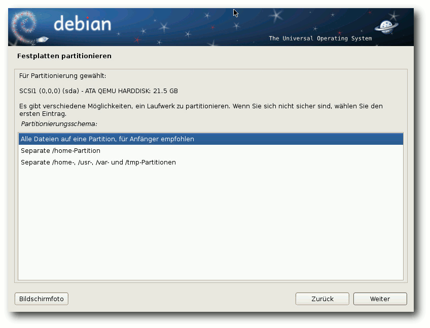
Wahl eines Partitionierungsschemas.
Nach der Partitionierung und Formatierung folgt die Installation des Basissystems, während derer man sich anderen Dingen widmen kann. Danach kann man weitere Software nach groben Kategorien auswählen. Standardmäßig sind „Grafische Desktop-Umgebung“ und „Standard-Systemwerkzeuge“ aktiviert. Falls die Pakete aus dem Internet heruntergeladen werden müssen, wird zuvor der Paketmanager konfiguriert. Auch die folgende Installation dauert eine Weile. Man hätte diese Auswahl vorziehen sollen, wodurch es nicht nötig wäre, zwischendurch an den Rechner zurückzukommen. Nach dem erfolgreichen Abschluss der Installation kann man den Bootloader installieren lassen. Standardmäßig installiert Debian GRUB 2 im Bootsektor, doch wenn man „nein“ wählt, kann man ein Gerät für die Installation auswählen. Nun ist das Ende der Installation erreicht und man kann das neue System starten.
Update
Das Update einer bestehenden Debian-Installation ist möglich und sollte reibungslos funktionieren. Dabei gibt es allerdings einige Einschränkungen. So können installierte Pakete aus externen Repositorys (darunter auch „debian-backports“) Probleme bereiten. Dennoch kann man zunächst das Update normal probieren; sollten Probleme auftreten, kann man die betroffenen Pakete entfernen und später gegebenenfalls in einer neueren Version wieder installieren. Auch ohne externe Pakete wird ein direktes apt-get dist-upgrade meist nicht zum Erfolg führen und beispielsweise viele Pakete zum Entfernen vorschlagen, die man eigentlich behalten will. Die Lösung ist ein Update in mehreren Schritten, bei dem man zuerst apt aktualisiert. Nichtsdestotrotz muss festgehalten werden, dass ein Online-Update nicht das selbe Ergebnis liefert wie eine Neuinstallation. Der Hauptgrund dafür sind diverse Pakete, die in der neuen Version durch andere ersetzt wurden. Als Beispiel könnte man PostgreSQL 8.3 nennen, das nicht automatisch auf 8.4 aktualisiert wird. Ähnlich ist es mit Python, MySQL und anderen. Wer apt-proxy im Einsatz hat, sollte irgendwann auf eine der Alternativen umstellen, und wer noch Nessus verwendet, findet in OpenVAS eine Alternative, die zudem auf älterem Nessus-Code beruht. Natürlich wird ein Update nur von der direkten Vorgängerversion 5.0 „Lenny“ unterstützt. Alle Einzelheiten zum Update sind in einem eigenen Kapitel der Anmerkungen zur Veröffentlichung ausführlich erläutert.Start ins Vergnügen
Debian 6.0 startet etwa gleich schnell wie Ubuntu 10.10, gemessen vom Bootloader bis zum Login-Prompt von GNOME oder KDE. Die Debian-Entwickler haben also einiges optimiert. Die GNOME-Variante bootet sogar spürbar schneller als Ubuntu, was möglicherweise an den zusätzlichen Cloud-Diensten liegt, die Ubuntu mitliefert. Im Test lagen diese Zeiten bei 20 Sekunden für GNOME und 30 Sekunden für KDE, was allerdings stark hardwareabhängig ist. Durch das Anzeigen des Bootprompts „verschenkt“ Debian im Vergleich mit anderen Distributionen aber weitere fünf Sekunden. Wer den Prompt nicht benötigt, kann natürlich die Konfiguration von GRUB 2 ändern. 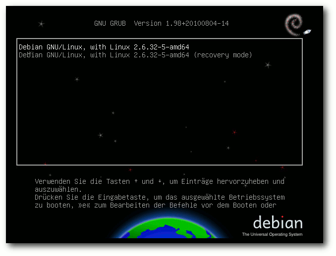Start mit GRUB 2.
Wurde ein Desktopsystem mit GNOME installiert, dann startet Debian 6.0 mit dem Display-Manager gdm, für KDE ist es kdm. Der Login-Bildschirm wurde in beiden Programmen mit einem neuen Debian-Design versehen. Dieses neue Design mit Weltraum-Thema ist vom Bootloader bis zum Desktop durchgängig. Nach dem Einloggen startet GNOME in Version 2.30.2. GNOME 2.32 wurde erst nach dem Einfrieren der Distribution fertig. Statt es gar nicht zu berücksichtigen, haben die Debian-Paketverwalter einzelne Teile aus GNOME 2.32 integriert. Auch KDE liegt in einer „alten“ Version vor, nämlich 4.4.5, da KDE 4.5 und 4.6 erst nach dem Einfrieren der Distribution erschienen. Es ist die erste Version von KDE 4 in Debian, da fast gleichzeitig mit dem Einfrieren von Debian 5.0 Mitte 2008 KDE erst in Version 4.1 erschien und die Entwickler zu diesem Zeitpunkt die Version 3.5 vorzogen.
Laufender Betrieb
Eine bedeutende Änderung in Debian 6.0 ist der Kernel – nicht nur wegen der Aktualisierung auf die Version 2.6.32, sondern auch wegen der Verschiebung von unfreien Firmware-Dateien in den „non-free“-Bereich. Wie schon zu Anfang geschrieben, wird es durch das Fehlen der unfreien Firmware nötig, diese unter Umständen separat zu installieren, im Endeffekt ändert sich für die Benutzer aber nichts, denn die Firmware muss installiert werden. Mangels Alternativen zu unfreier Firmware käme allenfalls der Austausch der betroffenen Hardware in Betracht. Auch beim Kernel hat sich das Debian-Team nicht für die neueste Version entschieden, nicht einmal für die neuestmögliche. Der Grund könnte in der langfristigen Unterstützung für diese Version liegen, die aktuell noch läuft. Sollte deren Unterstützung ablaufen, bevor der Support-Zeitraum für Debian 6.0 beendet ist (voraussichtlich Frühjahr 2015), würde Debian diese Version weiter pflegen. Ohnehin enthält der Debian-Kernel über den Stand von 2.6.32.28 hinaus zahlreiche Korrekturen und Erweiterungen der Hardware-Unterstützung. Genaue Auskunft gibt der Patch-Tracker [18]. Der GNOME-Desktop benötigt mit einem Terminalfenster ohne weitere offene Programme etwa 180 MB, das ist etwas weniger als bei Ubuntu und Fedora. KDE benötigt etwa 300 MB. Wer der Meinung ist, auf Nepomuk und Desktopsuche verzichten zu können, kann diese abschalten, wird dadurch aber allenfalls 50 MB für die Index-Datenbank einsparen. Bei der Geschwindigkeit lässt sich kein nennenswerter Unterschied zwischen den Desktops feststellen, sofern genug RAM vorhanden ist. Für KDE bedeutet das, dass man mindestens 768 MB RAM haben sollte. Den Speicherverbrauch der Desktops zu messen ist nicht einfach. Schwankungen von 20 MB und mehr nach oben und unten sind möglich, je nach dem Zeitpunkt der Messung. Dies erklärt sich teilweise daraus, dass manche Programme bei ihrem Start einen oder mehrere Dienste starten. Diese Dienste werden bei Nichtbenutzung teilweise nach einiger Zeit auch wieder beendet. Bei obigen Angaben wurde versucht, den ungefähren Mittelwert zu finden. 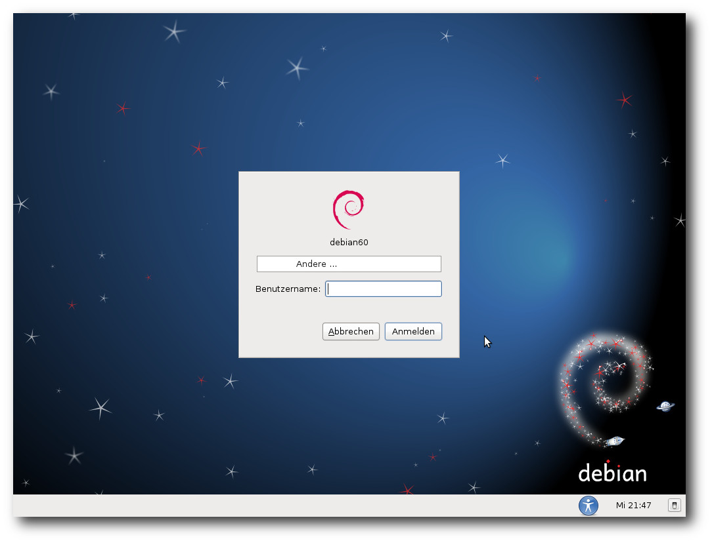Login-Prompt von gdm.
Das Desktopsystem GNOME wurde auf Version 2.30.2 aktualisiert, die einige neue Anwendungen und natürlich zahlreiche Verbesserungen mitbringt, darunter eine geteilte Ansicht und Reorganisation der Browser-Oberfläche in Nautilus. Es gab mehrere Verbesserungen im Zeiterfassungsprogramm (Projekt Hamster), einschließlich der Möglichkeit, das Programm eigenständig statt als Applet laufen zu lassen. Daneben sind noch zu nennen: Installation von Schriftarten durch Doppelklick in Nautilus, verbesserte GUI für die Tastatureinstellungen, Erweiterungen in gedit, Anzeige des aktuellen Tastatur-Layouts, falls der Benutzer mehrere eingerichtet hat, Erneuerung der Benutzerverwaltungs-Oberfläche in gnome-system-tools, Installation von Archiv-Tools bei Bedarf mittels PackageKit in File-Roller, unbegrenztes Hoch-Scrollen und Speicherung des Scroll-Puffers im GNOME-Terminal, Integration mit PackageKit und andere Verbesserungen in Brasero, Verbesserungen wie SSH-Tunnelung in Vinagre, schnellerer Start, automatische Synchronisation im Hintergrund und Implementierung von sogenannten Jump-Listen (Kontextmenüs, die mit einem Rechtsklick auf ein Icon aktiviert werden) in Tomboy und Unterstützung für iPhone und iPod-Touch-Geräte in gvfs. Zu den standardmäßig installierten Programmen unter GNOME gehören OpenOffice.org 3.2.1, der Mail- und Kalender-Client Evolution, GIMP 2.6.10, Inkscape 0.47.0, Shotwell 0.6.1, gleich zwei Scan-Programme (XSane 0.997 und Simple Scan 2.31.1), Ekiga 3.2.7 und Tomboy 1.2.2, wozu natürlich auch die Mono-Laufzeitumgebung (Version 2.6.7) benötigt wird. GStreamer ist ebenfalls dabei. Der Standard-Browser unter GNOME ist Epiphany. Einige Plug-ins, darunter ein Werbeblocker, sind vorinstalliert, aber erst einmal nicht aktiviert. Auch Iceweasel, die Debian-Variante von Firefox, ist in Version 3.5.16 installiert (wohlgemerkt, weder Version 3.6 noch 4.0 Beta wurden verwendet). Der Support für diese Version soll offenbar bis zum Ende von Squeeze reichen, für einige andere Browser gilt das jedoch nicht: Browser, die auf den Engines qtwebkit und khtml aufbauen, sind zwar enthalten, es besteht jedoch für sie keine vollständige Sicherheitsunterstützung. 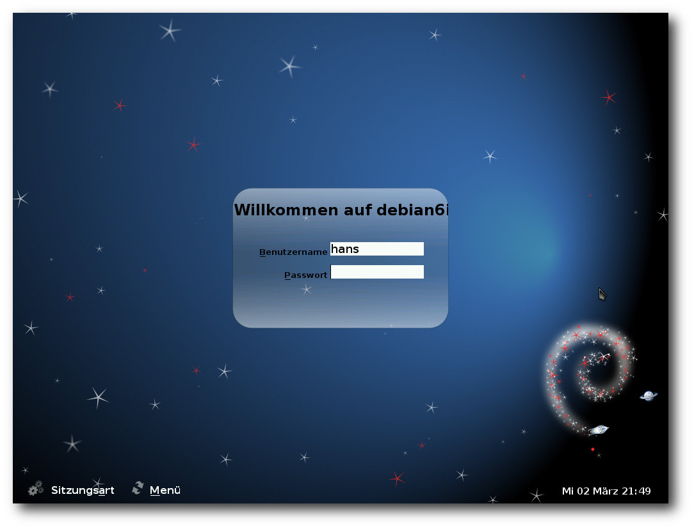
Login-Prompt von kdm.
KDE ist in Version 4.4.5 enthalten und damit die erste KDE-4-Version in Debian. KDE 3 wird nicht mehr unterstützt und beim Update automatisch durch KDE 4 ersetzt. Der Standard-Browser ist Konqueror, Iceweasel wird aber ebenfalls installiert. Neben der KDE-PIM-Suite 4.4.7 sind auch OpenOffice.org, GIMP und GStreamer vorhanden, darüber hinaus außer den zu KDE gehörenden Programmen nur wenig. Während Qt-Programme unter GNOME fast nicht von GTK+/GNOME-Programmen zu unterscheiden sind, fügen sich GTK+-Programme nur wenig in KDE ein. Unter GNOME sorgt die gtk-qt-Engine mit dem qtcurve-Theme für den angenehmen Effekt, unter KDE dagegen fehlt eine entsprechende Integration offenbar. Debian installiert die Schriften DejaVu, die eine recht große Unicode-Abdeckung besitzt, Liberation von Red Hat und diverse andere. Viele weitere sind im Archiv zu finden. Abseits des Desktops bietet Debian eine sehr große Zahl von Tools. Debian hat teils recht aufwendige Konstrukte entwickelt, um die vom System vorgegebene und die von den Nutzern geänderte Konfiguration zu trennen und die Verwaltung so einfach wie möglich zu machen. Oft muss man erst die README-Datei lesen, um sich mit dem Debian-System vertraut zu machen. Es lohnt sich fast immer, eigene Änderungen an die Debian-Vorgaben anzupassen, da man sonst alles selbst machen muss, Sicherheitsupdates eingeschlossen. Jedes Programm und jede Konfigurationsdatei ist in einer Manpage dokumentiert, was von den Debian-Richtlinien vorgeschrieben ist und auch eingehalten wird. Diese Dokumentation vermisst man bei vielen anderen Distribution schmerzlich. Für die Debian-Entwickler gehören Manpages zu den Dingen, die die Qualität einer Distribution ausmachen. Die Java-Umgebung von Debian ist immer noch OpenJDK 6. Es handelt sich um den von Sun freigegebenen Code von Java 6, der im Projekt IcedTea um fehlende Teile ergänzt wurde. Auch Softwareentwickler, die mit anderen Programmiersprachen arbeiten, kommen mit Debian voll auf ihre Kosten. Neben den Klassikern Perl, das nur geringfügig auf Version 5.10.1 aktualisiert wurde, Python (jetzt in Version 2.6.6) und PHP (Version 5.3.3), zu denen jeweils zahlreiche Module paketiert wurden, findet man auch zahlreiche weitere Compiler und Interpreter mit zusätzlichen Bibliotheken und Modulen vor.
Multimedia
Da Europa nicht von Softwarepatenten betroffen ist, kann Debian via GStreamer Abspielfähigkeiten für fast alle Multimediaformate anbieten. Ob dies bei einer Installation in den USA auch so wäre, ist nicht bekannt. Etwas überraschend liefen jedenfalls MP3 und alle Videoformate ohne Zutun, auch Flash-Videos. Lediglich YouTube arbeitet nicht mit dem Gnash-Plug-in zusammen, das in Version 0.8.8 enthalten ist. Für diese und wohl auch andere Video-Seiten muss man im Moment noch den Adobe Flash Player nachrüsten. Bei Epiphany soll die Erweiterung HTML5Tube dafür sorgen, dass HTML5-Videos abgespielt werden. Dies scheint noch nicht korrekt zu funktionieren, da das Bild oft stockte und schließlich stehenblieb, während der Sound in eine Schleife geriet. Das Abspielen von DVDs wurde nicht getestet. Bei Problemen mit verschlüsselten DVDs oder anderen Formaten sollte man das Repository von debian-multimedia.org [19] einbinden und die benötigten Codecs installieren. Unter KDE fehlten im Dateimanager Dolphin die Zuordnungen der Dateiendungen MP3 und FLV zu entsprechenden Abspielprogrammen. Der Player Dragonplayer war in der Lage, beides abzuspielen. Ansonsten war auch unter KDE alles im grünen Bereich.Paketverwaltung
Debian setzt nicht auf PackageKit. Unter GNOME wird mindestens einmal pro Woche automatisch geprüft, ob Software-Updates vorliegen und das Vorhandensein von Updates angezeigt. Für die grafische Paketverwaltung steht Synaptic bereit, das keine Wünsche offenlässt, sofern man sich keinen App-Store wünscht. Den erhält man mit dem Software-Center von Ubuntu, das in Version 2.0.7 eingebunden und an Debian angepasst wurde. 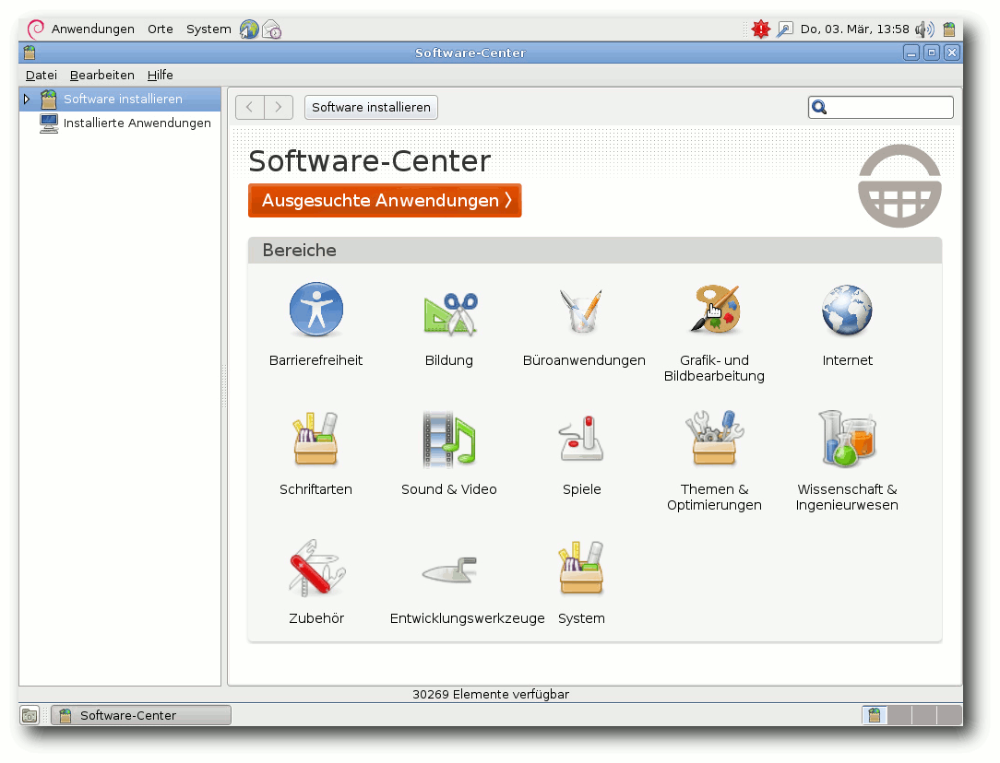Der Software-Center (Anzeige von vorliegenden Aktualisierungen im Panel).
Unter KDE ist kein Programm für eine grafische Paketverwaltung installiert. Auch hier werden etwa einmal in der Woche Benachrichtigungen über vorliegende Updates angezeigt. Das in Version 5.0 vorhandene goplay [20] ist nicht mehr standardmäßig installiert. Es wurde zwar von Version 0.3 auf 0.4 aktualisiert, besitzt aber weiterhin nicht einmal eine Verbindung zur Paketinstallation. Paketupdates sind erfahrungsgemäß durch das Ausbleiben von Überraschungen gekennzeichnet. Grobe Schnitzer in der Paketverwaltung, wie sie sich Fedora, Ubuntu und openSUSE schon geleistet haben, gab es bei Debian bisher nicht. Die meisten Benutzer können mit dem stabilen Distributionszweig auskommen, in den man in Einzelfällen bei Bedarf Aktualisierungen einbaut, vorzugsweise über backports.org, notfalls auch über Debian Testing oder Unstable. Dies minimiert den Wartungsaufwand. Andere Möglichkeiten sind das Einbinden von externen Repositorys, das Importieren von RPM-Paketen mit alien, das Kompilieren von Hand und das Bauen von eigenen Paketen. Dies ist sicher keine vollständige Aufzählung. Wer Software von Hand kompiliert, wird das Programm checkinstall wahrscheinlich nützlich finden, das die Software als minimales Debian-Paket installiert.
Fazit
Debian ist in Version 6.0 stark verbessert, was nicht nur durch die aktualisierte Software, sondern auch die Änderungen im Umfeld begründet ist. Debian sieht sich als das „universelle Betriebssystem“ und wird diesem Anspruch auch in der neuen Version 6.0 gerecht. Universell ist es hinsichtlich der Zahl der unterstützten Architekturen, aber auch hinsichtlich der Einsetzbarkeit – sei es als Desktop-, Laptop- oder Server-System. Die Installation kann von Einsteigern bewältigt werden, ohne Experten einzuschränken, auch wenn eine Installation mit weniger Klicks möglich und wünschenswert wäre. Die relativ sparsame Ausstattung mit Features sorgt für einen geringen Speicherbedarf in der Standardinstallation. In dem nicht zu lösenden Konflikt zwischen Aktualität und Stabilität setzt Debian klare Priorität auf die Stabilität. Das führt dazu, dass neue Debian-Versionen nicht so häufig erscheinen können und die Software etwas älter ist. Das heißt aber nicht, dass sie unbenutzbar ist; so manche Unternehmensdistribution ist mit deutlich älterer Software noch im Einsatz. Selbst diejenigen Benutzer, die immer das Neueste haben wollen oder brauchen, kann Debian im Prinzip bedienen. In Zukunft wird es wahrscheinlich noch mehr Abstufungen zwischen Aktualität und Stabilität geben. Links[1] http://www.pro-linux.de/artikel/2/1495/debian-gnulinux-60-squeeze.html
[2] http://www.pro-linux.de/news/1/14519/debian-diskutiert-freeze-termin.html
[3] http://www.freiesmagazin.de/freiesMagazin-2009-05
[4] http://www.pro-linux.de/news/1/14986/debian-friert-im-maerz.html
[5] http://www.pro-linux.de/news/1/15250/grafischer-debian-installer-in-der-schwebe.html
[6] http://www.pro-linux.de/news/1/16295/debian-stimmt-fuer-erweiterte-mitgliedschaft.html
[7] http://www.pro-linux.de/news/1/15539/debian-startet-offizielle-archiv-zeitmaschine.html
[8] http://www.pro-linux.de/news/1/16126/backportsorg-zieht-unter-dach-von-debian.html
[9] http://www.pro-linux.de/news/1/16207/vorschlag-fuer-zusaetzliche-aktuellere-debian-veroeffentlichungen.html
[10] http://www.debian.org/ports/
[11] http://www.pro-linux.de/news/1/16219/gnome-232-veroeffentlicht.html
[12] http://www.pro-linux.de/news/1/15495/gnome-230-freigegeben.html
[13] http://www.pro-linux.de/news/1/16634/kde-sc-46-freigegeben.html
[14] http://www.pro-linux.de/news/1/15287/kde-sc-44-freigegeben.html
[15] http://live.debian.net/
[16] http://www.debian.org/releases/stable/installmanual
[17] http://www.freiesmagazin.de/freiesMagazin-2010-05
[18] http://patch-tracker.debian.org/package/linux-2.6/2.6.32-30
[19] http://debian-multimedia.org/
[20] http://www.pro-linux.de/artikel/2/245/geh-spielen.html
| Autoreninformation |
| Hans-Joachim Baader (Webseite) befasst sich seit 1993 mit Linux. 1994 schloss er sein Informatikstudium erfolgreich ab, machte die Softwareentwicklung zum Beruf und ist einer der Betreiber von Pro-Linux.de. |
Zum Index
Test: OpenDocument-Format für den Datenaustausch
von Dominik Wagenführ Man liest ja des Öfteren in den Nachrichten, dass sich irgendeine Regierung der Welt (zuletzt Lettland [1]) dazu entschließt, das OpenDocument-Format (ODF) [2] in Behörden zu akzeptieren bzw. zu nutzen. Als Vorteil von ODF wird – vor allem von Linux-Anhängern – oft genannt, dass sich das Format auf jedem Linux-Rechner öffnen lässt und immer gleich aussieht, weil es ja ein offener Standard ist. Sprich, das Problem wie bei Microsoft Office, dass ein Dokument (auch bei gleicher MS-Office-Version) auf jedem Rechner anders aussehen kann, gibt es angeblich nicht. Dieser These soll in diesem Artikel nachgegangen werden. Getestet wurden die Anwendungen OpenOffice.org Writer 3.2.0 [3], TextMaker 2008 (rev 503) [4], Abiword 2.8.2 [5], KWord 4.4.5 [6] und Google Docs [7]. In jeder Anwendung (bis auf KWord) wurde ein Beispieldokument (siehe unten) erstellt, als ODT exportiert und anschließend in allen Programmen importiert, um zu prüfen, wie das Dokument dann aussieht. Hinweis: Libre Office wurde nicht getestet, da der Unterschied zu OpenOffice.org noch sehr gering ist und sich die Ergebnisse somit nicht unterscheiden werden.Das Beispieldokument
Als Beispieldokument wurde in OpenOffice.org Writer ein Brief mit einigen Rechnungsposten erstellt, wie man ihn auch als normaler Anwender schreiben würde. Dabei wurden folgende Formatierungen bzw. Besonderheiten eingebracht:- Rand überall 2 cm
- Schriftart Nimbus Roman No9 L, Schriftgröße 12
- unterstrichene Kopfzeile mit Anschrift
- Fußzeile mit aktueller Seite und Gesamtanzahl der Seiten
- Anschrift mit unterstrichener Absenderzeile darüber
- kleines umrahmtes Logo rechtsbündig neben der Anschrift, gespeichert als PNG mit transparentem Hintergrund
- Stadt und aktuelles Datum (als Feldbefehl) rechtsbündig
- Rechnung als Tabelle mit teilweise Linien
- „Unterschrift“ als eingebundenes Bild
- URL-Angabe unter dem Namen
- eine Leerzeile Platz zum Seitenende
Das Beispieldokument für den Test.
Diese Vorlage wurde dann – so gut es ging – in allen obigen genannten Programmen nachgebaut und als OpenDocument-Text (ODT) gespeichert. Die Dokumente wurde dabei natürlich nicht aus dem OOo-Dokument importiert, sondern komplett neu erstellt. Neben der Seitenformatierung, die in jeder Anwendung wohl anders umgesetzt wurde, gibt es bei manchen Programmen Besonderheiten, auf die hier hingewiesen werden soll.
OpenOffice.org Writer
In OpenOffice.org wurde zusätzlich aus der eingebetteten Calc-Tabelle ein Nutzen gezogen und die Berechnung der Umsatzsteuer sowie die Addition der Beträge als Formel verfasst.Abiword
Der Feldbefehl für das Datum konnte nur im Format „Monat Tag, Jahr“ eingebunden werden. Da Bilder keinen Rahmen haben können, wurde das Logo oben rechts als Hintergrundbild eines Textrahmens nachgestellt. Daneben gab es vom Abiword-Dokument zwei Versionen. Die erste enthielt keine Bilder, ließ sich nach dem Export als ODT aber in keinem anderem Programm mehr öffnen (siehe unten).KWord
Für KWord reichte mein Fachwissen leider nicht aus, sodass ich den Brief dort nicht umsetzen konnte. In KWord wird also einzig die ODT-Importfunktionalität getestet.Google Docs
Google Docs kennt kein Nimbus Roman No9 L, daher wurde Times Roman genutzt. Da es keine Feldbefehle gibt, wurden das Datum sowie die Seitenzahlen per Hand eingetragen. Bei Tabellen können die Ränder nicht selektiv pro Zelle bzw. Zeile aktiviert werden, wodurch die ganze Tabelle umrahmt werden musste. Rahmen um Bilder gibt es nicht, daher fällt dieser beim Google-Docs-Dokument weg.Test der Importfunktionalität
Im Folgenden werden die vier erstellten ODT-Dateien in den fünf Testprogrammen importiert/geöffnet und mit der Originaldatei verglichen. Hinweis: Es wird dabei explizit nicht mit der OpenOffice.org-Vorlage verglichen, sondern immer mit der Anwendung, aus der das ODT heraus exportiert wurde.OpenOffice.org Writer
Das ODT, welches aus OOo-Writer gespeichert wurde, wurde absolut korrekt geöffnet, schließlich ist ODT der Standard unter OpenOffice.org. Das TextMaker-Dokument sah fast wie im Original aus. Die Feldbefehle wurden alle erhalten und auch die Tabelle wurde korrekt formatiert. Einzig der Rahmen um das Logo oben rechts ist verschwunden. Bei Öffnen des ersten Abiword-Dokuments meldete OOo Writer, dass die Datei defekt sei und eine Reparatur versucht wird. Diese schlug aber fehl und wurde mit „Formatfehler in Teildokument content.xml an Position 205,228“ abgelehnt. Die Korrektur der zweiten Version ging, nur fehlte das Logo oben rechts, die Kopfzeile war an der Telefonnummer abgeschnitten (weil der Textrahmen des Bildes darüber lag), der Datum-Feldbefehl fehlte ebenso und die Unterschrift als Bild wurde zentriert dargestellt. Zum Schluss wurde die Tabelle komplett umrandet dargestellt. Das aus Google Docs exportierte ODT sieht in OpenOffice.org Writer fast identisch zum Original aus. Einzig der Zeilenabstand ist ein kleines bisschen enger, was aber kaum auffällt. Dass die Tabelle etwas nach links verschoben und nicht bündig zum Rand ist, ist auch im Original Google-Docs-Dokument so.TextMaker
Das Programm TextMaker ist Teil der SoftMaker-Suite, welches es letztes Jahr bei der Aktion „Load and Help“ kostenlos in der alten 2008-er Version zum Download gab [8]. Das OOo-Writer-Dokument sieht fast identisch aus, nur der transparente Hintergrund des PNGs macht Probleme, denn dieser wird komplett schwarz dargestellt. Das aus TextMaker exportierte ODT hat interessanterweise das gleiche Problem mit dem transparenten Hintergrund. Daneben ist der Feldbefehl für das aktuelle Datum irgendwo verloren gegangen. Das Öffnen des ersten Abiword-Dokuments wurde mit der lapidaren Meldung „Datei kann nicht geöffnet werden“ abgelehnt. Die zweite Abiword-Version ließ sich öffnen, es fehlte aber das Logo oben rechts, der Textrahmen rutschte dafür etwas hoch und verdeckte damit ein Teil der Kopfzeile. Der Feldbefehl für das Datum war verschwunden, ebenso wie jegliche Unterstreichung (in der Kopfzeile und über der Anschrift). Zum Schluss wurde die Tabelle komplett umrandet dargestellt und nicht nur die drei ausgewählten Zeilen. TextMaker öffnet das ODT aus Google Docs leider nur sehr inkorrekt, da sich der Zeilenabstand massiv geändert hat. In jeder Zeile wurde unterhalb ein Abstand von 10 Punkt eingefügt, sodass von der Tabelle gerade nur die erste Zeile auf die erste Seite passt. Daneben fällt auf, dass Stadt und Datum nicht mehr rechtsbündig sind, sondern am linken Rand dargestellt werden. Gleiches gilt für die zweite Spalte der Tabelle, deren Werte alle nach links gerutscht sind.Abiword
Das OOo-Writer-Dokument ließ sich ohne Problem öffnen und sah ganz gut aus. Der transparente Hintergrund machte keine Probleme, dafür fehlt aber der Rahmen um das Bild. Der Feldbefehl für das Datum wandelte sich etwas in der Schreibweise von „15. Februar 2011“ zu „15/02/11“ und in der Tabelle hatte jede Zeile eine Linie, anstatt nur jeder zweiten. Beim ODT aus TextMaker sieht es ähnlich aus: Der Rahmen um das Logo fehlt, dieses ist dafür um einige Zentimeter nach unten und rechts gerutscht. Dadurch rutscht der Text auf der Seite auch etwas nach unten, sodass die letzte Zeile des Briefes nicht mehr auf die erste Seite passt und eine zweite begonnen wird. Daneben wurde der Feldbefehl für das Datum als Reintext exportiert und verliert damit seine Funktion, wird dafür aber wie im Original dargestellt. Interessant ist, dass man zum Abiword-ODT den gleichen Text wie bei TextMaker oben schreiben kann. Das heißt, das Logo oben rechts fehlt, der Textrahmen rutschte dafür etwas hoch und verdeckt damit ein Teil der Kopfzeile. Der Feldbefehl für das Datum ist verschwunden und die Tabelle wird komplett umrandet dargestellt und nicht nur die drei ausgewählten Zeilen. Bei ersten Abiword-Test (bei dem in den anderen Programmen das Abiword-ODT gar nicht geöffnet werden konnte, siehe oben) fehlten zu den eben genannten Dingen auch noch die Kopf- und Fußzeile. In Abiword sieht das Google-Docs-Dokument identisch zu TextMaker aus. Das heißt, der Zeilenabstand ist viel zu groß und alle ehemals rechtsbündigen Texte sind nun linksbündig.KWord
Beim OpenOffice.org-Writer-Dokument fehlt wie beim Abiword-Import auch der Rahmen um das Bild. Die restlichen Elemente werden aber korrekt dargestellt. Sehr schlecht ist, dass sich das Seitenformat geändert hat, sodass die URL am Ende des Text auf der zweiten Seite landete. Das Ergebnis des TextMaker-Dokumentes sieht ähnlich aus: Der Rahmen um das Bild fehlt, zusätzlich ist es nach unten rechts verrutscht. Der Zeilenabstand stimmt gar nicht, sodass alles ab „Mit freundlichen Grüßen“ auf der zweiten Seite zu finden ist. Zusätzlich hat sich die Tabelle etwas nach rechts verschoben, sodass der Text links nicht mehr bündig ist und auf der rechten Seite die Linien ein wenig über den Rand ragen. Daneben ist auch der Feldbefehl für das Datum verschwunden. Das erste Abiword-Dokument konnte mit der Meldung „Reason: Parsing error in the main document at line 205, column 235 Error message: QXml” nicht geöffnet werden. Das zweites Dokument lässt sich öffnen, wird aber nicht korrekt dargestellt. Im Gegensatz zum TextMaker-Dokument ist der Zeilenabstand nun zu gering, sodass alles sehr gedrückt wirkt. Der Tabellenrand der ersten Tabelle reicht dabei sogar in den Text der vorherigen Zeile hinein. Daneben fehlt wieder das Logo und der Textrahmen ist in die Kopfzeile gerutscht. Dies führt dazu, dass die Kopfzeile zwar nicht überdeckt, aber dafür umgebrochen wird und zweizeilig erscheint. Der Feldbefehl für das Datum ist verschwunden und die Tabelle erscheint komplett umrahmt. Zum Schluss ist der Klarname „Max Mustermann“ der Unterschrift rechts vom zugehörigen Bild der Unterschrift gelandet. Dass KWord manchmal Probleme mit dem zweiten Zeilenabstand hat, sieht man ja oben. Bei dem ODT aus Google Docs verstärkt sich der Effekt aber scheinbar, sodass auf der ersten Seite nur noch Anschrift und Betreff zu finden sind, der Textkörper und die Tabelle sind auf der zweiten Seite zu finden. Alle Texte sind korrekt ausgerichtet, dafür hat die Tabelle ihre Linien verloren.Google Docs
Das Writer-Dokument ließ sich zwar öffnen, die Schriftart Nimbus Roman No9 ist aber in Google Docs nicht bekannt und wurde durch Verdana ersetzt. Dadurch veränderte sich auch die Schriftgröße, was zu einer Verschiebung des Textes führte. Davon betroffen war vor allem die Kopfzeile, die nicht mehr komplett in eine Zeile passte und so zweizeilig dargestellt wurde. Ein weiteres Problem war dabei die Unterstreichung der Leerzeichen, die nicht angezeigt wurde. Da GoogleDocs derzeit keine Feldfunktionen unterstützt, wurden Datums- und Seitenzahlenfelder zwar entfernt, aber durch die jeweiligen, korrekten Inhalte ersetzt. Das Logo oben rechts kommt ohne Umrandung aus, dafür wird die Tabelle komplett umrandet dargestellt. Der Klartextname unter der Bildunterschrift wird nun neben dem Bild angezeigt und verschiebt sich daher nach links. Zum Schluss wurde der ursprüngliche Link unter dem Text zu http://www.google.com/url?q=http%3A%2F%2Fde.wikipedia.org%2Fwiki%2FMax_Mustermann&sa=D&sntz=1&usg=AFQjCNG7ZY9WoKE_KNmnn0t8AhUh2aJq6A geändert. Zu großen Teilen ist das Ergebnis des aus TextMaker exportierten ODFs dasselbe wie bei OOo Writer. Unterschiedlich ist die Position des Logos, welches wie bei anderen Programmen auch etwas weiter nach unten und nach rechts an den Rand gerutscht ist. Die Unterschrift am Ende befindet sich dafür an korrekten Position. Das Abiword-OpenDocument konnte in Google Docs nicht geöffnet werden. Der Upload wurde mit der Meldung „Dokument kann nicht umgewandelt werden.“ quittiert. Das unter Google Docs gespeicherte ODF sah nach dem Re-Import wieder genauso aus wie vor dem Speichern.Ergebnis
Das Resultat des Tests ist eher ernüchternd. Wenn überall OpenOffice.org oder TextMaker als Programm der Wahl eingesetzt wird, sind zwar kleinere Probleme vorhanden, mit denen man aber meist leben kann. Sobald aber „Exoten“ wie KWord oder Abiword ins Spiel kommen, sieht es sehr schlecht aus. Die Formatierung bei mit KWord geöffneten Dokumenten stimmte so gut wie nie und brachte das komplette Layout aufgrund der falschen Zeilenabstände völlig durcheinander. Bei Abiword dagegen scheinen die Entwickler den OpenDocument-Export etwas verhauen zu haben, da in der ersten Version des Abiword-Exports kein Programm das ODT öffnen konnte. Selbst Abiword, mit dem das Original-Dokument gespeichert wurde, stellte das ODT nicht mehr korrekt dar. Die letzte Anmerkung ist sowieso etwas, was kaum ein Anwender verstehen wird: Wenn ein Dokument in einem Programm in einem standardisierten und angepriesenem Format gespeichert wird, sollte man auch erwarten können, dass es nach dem Öffnen mit dem gleichen Programm genauso aussieht. Seltsamerweise schafft dies nur OpenOffice.org mit seinem Writer und Google Docs. Alle andere Programme stellten das geladene ODT nicht exakt so dar wie vor dem Speichervorgang. Als Fazit kann man festhalten, dass ODF zwar ein freies und standardisiertes Dokumentenformat ist, aber zum Dateiaustausch genauso viel taugt, wie Microsofts DOC bzw. DOCX. Wer (einigermaßen) sicher sein will, dass sein Dokument beim Empfänger so aussieht, wie er es bei sich entworfen hat, sollte dieses als PDF speichern/"ëxportieren/drucken und so verschicken. Alle Testdateien können im Original, als ODT und als PDF in einem Archiv odf-gesamt.tar.gz heruntergeladen werden. Links[1] http://www.heise.de/newsticker/meldung/Lettland-ODF-Akzeptanz-vorgeschrieben-1173221.html
[2] http://de.wikipedia.org/wiki/OpenDocument
[3] http://de.openoffice.org/
[4] http://www.softmaker.de/
[5] http://abiword.org/
[6] http://www.koffice.org/kword/
[7] http://docs.google.com/
[8] http://www.loadandhelp.de/
| Autoreninformation |
| Dominik Wagenführ (Webseite) ist zwar Verfechter von Freier Software und freien Standards, findet aber auch, dass bei manchen Diskussionen die Probleme damit oft einfach unter den Tisch gekehrt und ignoriert werden. |
Zum Index
Der März im Kernelrückblick
von Mathias Menzer Basis aller Distributionen ist der Linux-Kernel, der fortwährend weiterentwickelt wird. Welche Geräte in einem halben Jahr unterstützt werden und welche Funktionen neu hinzukommen, erfährt man, wenn man den aktuellen Entwickler-Kernel im Auge behält.Linux 2.6.38
Einige Tage Abwesenheit waren für Torvalds der Hauptgrund, noch den -rc8 [1] zu veröffentlichen. Ein neues Merge Window, während dessen er keine Pull Requests bearbeiten kann, hält er für sinnlos. Immerhin kamen noch einige Fehlerkorrekturen auch für schon länger bekannte Probleme hinzu, die noch mal eine Woche getestet werden konnten. Am 17. März wurde dann nach einer Entwicklungszeit von nur 69 Tagen der Linux Kernel 2.6.38 [2] freigegeben. Damit hat .38 die bisherige durchschnittliche Dauer von 80 Tagen stark unterboten; es bleibt abzuwarten ob dies einen Trend darstellt oder nur einen Ausreißer. Dennoch hat der neue Kernel einiges zu bieten, gerade auch im Desktop-Bereich. Allem voran sind die bereits viel gerühmten automatischen Task-Gruppen nun mit an Bord (siehe „Der November im Kernelrückblick“, freiesMagazin 12/2010 [3]). Diese Methode, die verfügbare Rechenzeit des Prozessors zu verteilen, soll insbesondere bei einem System unter Last dafür sorgen, dass das Gerät noch auf Eingaben des Anwenders reagiert. Auch rechenintensive Aufgaben wie zum Beispiel das Kompilieren eines Linux-Kernels sollen noch Luft lassen, damit der Nutzer nebenher den Browser bedienen oder seine E-Mails lesen kann. Verbesserungen an der Dateisystem-Abstraktionsschicht VFS, die Anwendungen eine einheitliche Schnittstelle für die Arbeit mit den verschiedenen Dateisystemen bietet, sollen ebenfalls positive Auswirkungen auf die Leistung insbesondere bei Mehrkern-Systemen haben. Hier wurde „dcache_lock“, ein nicht sehr effizienter Locking-Mechanismus, durch „RCU-based path lookup“ ersetzt, was die Skalierbarkeit auf Mehrkern-CPUs erhöht, aber auch die Prozesse bei einzelnen Kernen beschleunigt. Neue Dateisysteme sind auch diesmal nicht mit von der Partie; btrfs wurde jedoch mit mehr als nur einigen Fehlerkorrekturen bedacht. Das Dateisystem unterstützt nun den LZO (Lempel-Ziv-Oberhumer) zur Komprimierung, ein nicht sehr stark komprimierender, jedoch sehr schneller Algorithmus. Im Vergleich zu zlib, das auf dem verbreiteten deflate-Algorithmus aufbaut, lässt sich damit bei Dateisystemoperationen bis zu 50 % Zeit sparen, manchmal, aufgrund der geringeren Datenmengen, sogar gegenüber unkomprimierten Dateisystemen. Eine weitere Neuerung ist die Fähigkeit, Schnappschüsse als Read-Only (nur lesen) zu markieren. Tritt in einem btrfs-Dateisystem ein Fehler auf, so wird es nun gezwungenermaßen neu als Read-Only eingehängt.„B.A.T.M.A.N.“ hat nichts mit dem Namen des aktuellen und der beiden Vorgänger-Kernel (siehe „Der Oktober im Kernelrückblick“, freiesMagazin 11/2010 [4]) zu tun, sondern bedeutet „Better Approach To Mobile Adhoc Networking“ (deutsch: „Verbesserter Ansatz für mobile Sofort-Netzwerke“). Es stellt ein Protokoll zum Aufbau von Drahtlos-Netzwerken dar, die ohne vorab existierende Infrastruktur auskommen müssen, sondern auf die daran beteiligten Teilnehmer, zumeist vermutlich Notebooks, zur Übermittlung der Netzwerk-Kommunikation setzen. Angedachte Anwendungsfälle sind zum Beispiel die Herstellung von notdürftigen Kommunikationswegen nach Naturkatastrophen oder die Umgehung von Zensurmaßnahmen – beides Szenarien, die leider zum Veröffentlichungszeitpunkt für 2.6.38 äußerst aktuell waren [5] [6]. An der Netzwerkfront wurde die Behandlung ausgehender Pakete optimiert. Bereits in 2.6.35 wurden „Receive Packet Steering“ und „Receive Flow Steering“ eingeführt (siehe „Der August im Kernelrückblick“, freiesMagazin 09/2010 [7]), die die Bearbeitung eingehender Netzwerk-Pakete im ersten Fall alle möglichst gleichmäßig auf die im System vorhandenen CPUs verteilen und im zweiten zusammenhängende Datenströme der CPU zuweisen, die dafür zuständige Anwendungen ausführen. „Transmit Packet Steering“ ordnet nun einer CPU, die Pakete versendet, jeweils eine Warteschlange zu, über die diese dann versendet werden. Wirklich von Nutzen ist diese Funktion allerdings nur dort, wo mehrere Prozessoren und auch mehrere Netzwerk-Schnittstellen zur Verfügung stehen, wie zum Beispiel in Netzwerk-Hardware oder vernetzten Hochleistungsrechnern. Zum Schluss bringt der neue Kernel auch gleich noch Unterstützung für AMDs Fusion-Plattform [8] mit. Diese vereint Prozessor und Grafikkern auf einem Chip und soll unter anderem in Tablet-PCs, aber auch Netbooks und kleinen Desktops zum Einsatz kommen, wo es auf geringe Maße, wenig Stromverbrauch und Abwärme ankommt. Eine vollständige Auflistung der Neuerungen, insbesondere an der Treiber-Front, liefert die englischsprachige Seite Kernel Newbies [9], die mittlerweile für jeden neuen Kernel eine eigene Treiber-Seite [10] pflegt.
Linux 2.6.39
Das Merge Window für 2.6.39 ist bereits offen und bisher wurden schon einige Änderungen von Torvalds aufgenommen. Bemerkenswert ist darunter ein Pull Request von Arnd Bergman mit dem Kommentar „Total BKL removal, finally“ (deutsch: Vollständige Entfernung des BKL, endlich“) [11]. Dahinter verbergen sich eine Reihe Patches, die die letzten Spuren des Big Kernel Lock tilgen.Android und GPL
Android-Schöpfer Google steht bereits von Seiten Oracles aufgrund der Nutzung von Java in Android unter Beschuss, da kommt auch noch aus der Kernel-Entwickler-Gemeinde der Vorwurf des Verstoßes gegen die GPL. Stein des Anstoßes war die von Google entwickelte Bibliothek „Bionic“, die Quelltext aus Header-Dateien des Linux-Kernels enthalten soll und damit unter GPL lizenziert werden müsse, anstatt unter der derzeit verwendeten BSD-Lizenz. Torvalds widersprach dem jedoch in einem Interview [12]: Die Bionic-Bibliothek nutze lediglich Schnittstellen zum Kernel und dies stelle in keiner Weise ein abgeleitetes Werk nach der GPL dar.|
Kurz erläutert: „Pull Request“ Die Entwicklung des Linux-Kernels läuft in dem Versionsverwaltungssystem Git ab. Dieses zeichnet sich durch die Möglichkeit aus, aus einem Hauptentwicklungszweig einfach einen eigenen abzutrennen, Änderungen aus dem originären in den eigenen einzufügen und diesen dann bei Bedarf wieder mit dem Hauptentwicklungszweig zusammenzuführen. Dies muss allerdings von einem der Betreuer des Hauptzweiges ausgeführt werden. Ein „Pull Request“ ist die Bitte eines Entwicklers an diesen Betreuer, die Änderungen in den Ursprungszweig zu übernehmen. Im Falle der Linux-Entwicklung erfolgt dies mittels einer Mail an die Entwickler-Mailingliste, deren Betreff zum Beispiel so aussieht: „[GIT PULL] Total BKL removal, finally“ Daraufhin nimmt der Hauptentwickler, beim Linux-Kernel, Linus Torvalds, einen Merge („Verschmelzung“) vor, der den zeitweise abgetrennten Entwicklungszweig wieder mit dem Ursprung zusammenführt. |
Links
[1] http://lkml.org/lkml/2011/3/8/11
[2] http://lkml.org/lkml/2011/3/14/508
[3] http://www.freiesmagazin.de/freiesMagazin-2010-12
[4] http://www.freiesmagazin.de/freiesMagazin-2010-11
[5] http://de.wikipedia.org/wiki/T%C5%8Dhoku-Erdbeben_2011
[6] http://de.wikipedia.org/wiki/B%C3%BCrgerkrieg_in_Libyen_2011
[7] http://www.freiesmagazin.de/freiesMagazin-2010-09
[8] http://de.wikipedia.org/wiki/Accelerated_Processing_Unit
[9] http://kernelnewbies.org/Linux_2_6_38
[10] http://kernelnewbies.org/Linux_2_6_38-DriversArch
[11] http://lkml.org/lkml/2011/3/16/420
[12] http://www.heise.de/open/meldung/Linus-Torvalds-Android-verstoesst-nicht-gegen-die-GPL-1212177.html
| Autoreninformation |
| Mathias Menzer wirft gerne einen Blick auf die Kernel-Entwicklung, um mehr über die Funktion von Linux zu erfahren. |
Zum Index
Eine Einführung in die Programmiersprache Pike
von Clemens Hackenberg So manch ein Programmierer, welcher C/C++ oder Java benutzt, kommt irgendwann in die Situation, eine interpretierte Programmiersprache benutzen zu wollen, weil z. B. auf dem Zielsystem kein Compiler zur Verfügung steht. Der Mensch ist ein faules Wesen und nicht jeder ist gewillt, sich eine komplett neue Syntax anzueignen. Eine interpretierte Sprache, die zumindest von den Grundlagen her C sehr ähnlich ist und außerdem mit der Ausführgeschwindigkeit von etablierten Programmiersprachen wie Python mithalten kann, ist Pike.Historisches
Pike [1] hieß in der Mitte der 90er, dem weiß-grauen PC-Zeitalter, einmal µLPC und wurde von Fredrik Hübinette als Neuimplementierung der Sprache LPC4 entworfen, da er mit der kommerziellen Nutzbarkeit der Lizenz derselben Implementierung unzufrieden war. Konsequenterweise steht Pike unter den Bedingungen der GPL, der MPL und der LGPL zur Verfügung [2]. LPC war eine Programmiersprache zum Entwickeln sog. Multiuser Dungeons, dennoch hat das heutige Pike syntaktisch noch sehr viel mit LPC gemein; man könnte also sagen, die Syntax war damals schon sehr ausgereift, wenn man den Einsatzzweck bedenkt. Früher wurde Pike von Roxen entwickelt und gewartet, heutzutage hat die Universität Linköping diese Aufgabe übernommen.In Pike geschriebene Software
Der Nutzerkreis ist ziemlich klein, jedoch existent: Pike wird von Roxen Internet Software [3] als Basis ihres CMS benutzt. Ein Fork eines frühen Roxen-Servers ist das quelloffene Projekt Caudium [4], welches das XML-basierte Format RXML zur Benutzung als Vorlage beibehalten hat. Pike kann hierbei, ähnlich wie das bei PHP möglich ist [5], serverseitig direkt in den Inhalt eingebunden werden. Auch PHP kann in Caudium benutzt werden. Darauf baut openSTeam [6], eine Software zur Verwaltung virtueller Wissensräume, auf. Die Firma Opera verwendet Pike, um Webseiten für mobile Webbrowser herunterzurechnen [7], was zeigt, dass Pike auf Performance ausgerichtet entwickelt worden ist.Das erste Programm
So, genügend hintergründige Fakten vermittelt, es wird Zeit für ein erstes Beispielprogramm. Und weil es in der Welt der Programmiersprachen so üblich ist, eine Einleitung mit einen Code-Beispiel zu beginnen, welches einen kurzen Text ausgibt, beginnt auch diese Einleitung auf diese Weise:
int main()
{
write("Hallo Leser!\n");
return 0;
}
Vielen Lesern dürfte dies recht vertraut vorkommen, denn dieses kleine Beispiel
ähnelt dem „Hello-World!“ von C.
Bevor man diesen Schnipsel eines Quelltextes in den Texteditor kopiert, als
hello.pike abspeichert und ausführen kann, benötigt man natürlich den
Interpreter.
Installation
Es gibt mehrere Wege, an Pike zu kommen. Der einfachste ist sicherlich, Pike aus der Paketverwaltung seiner Wahl zu installieren. Da Pike aber relativ unbekannt ist, ist diese Möglichkeit nicht in jedem Falle gegeben und Pike steht häufig nicht oder nur sehr veraltet als Paket zur Verfügung. Dann muss man Pike von der offiziellen Homepage herunterladen [8], wo man nicht nur verschiedene Versionen in Form von Binärcode oder Quelltext, sondern auch das alte µLPC herunterladen kann. Das ist zugegeben nur fortgeschrittenen Nutzern zu empfehlen. Wenn es eine Version > 7.6 im Paketsystem gibt, sollte man diese installieren.Dateikonventionen
Dateien, die Quelltext in Pike enthalten, enden konventionell auf .pike. Natürlich kann man sich die Endung aussuchen. Das oben gezeigte Beispiel wird ausgeführt, in dem man in die Konsole folgendes eingibt:$ pike hello.pikeUm eine Datei mit Quelltext direkt – ohne die Angabe des Interpreters – auszuführen, also mit ./hello.pike, muss man im Texteditor in der entsprechenden Datei #!/usr/bin/env pike in die erste Zeile schreiben und der Datei dann in der Konsole mit chmod +x hello.pike die benötigten Rechte zum Ausführen übertragen. Mit dem Rautezeichen lassen sich in Pike übrigens Makros ähnlich wie in C definieren, welche von einem Präprozessor vor dem eigentlichen Ausführen einer Quelldatei abgearbeitet werden [9].
Grundlagen: Typen und Funktionen
Wie einige Leser bestimmt schon gemerkt haben, ist die Funktion main() der Anfangspunkt jedes Programms.
int main()
{
return 0;
//das Grundgeruest der Funktion
}
Hier ist zu sehen, dass Kommentieren auf dieselbe Art und Weise geschieht wie in
C:
//sog. C++ Kommentar, einzeilig /*Mehrzeiliger Kommentar, oft die ordentlichere Loesung*/Ebenfalls ist zu sehen, dass bei Funktionen der Rückgabetyp angegeben werden muss, in diesem Fall int, also eine Ganzzahl zwischen -2147483648 und 2147483647. Hat eine Funktion keinen Rückgabetyp, schreibt man void davor. Man kann auch die Funktion main() mit dem Rückgabetyp void implementieren:
void main()
{
/*das Grundgeruest
der Funktion main()
ohne Rueckgabe eines Wertes*/
}
Auch wenn man einer Funktion eine Variable zur Verarbeitung gibt, muss man den
Typ angeben:
int pluszwei(int zahl){
return zahl+2;
}
Auch Variablen werden deklariert, indem man den Typ mit angibt:
int i = 42;Zur weiteren Benutzung der Variable muss der Typ nicht mehr erwähnt werden. Neben int gibt es noch zwei weitere elementare Variablentypen, string und float. Letzteres ist für Fließkommazahlen und ist bis zur neunten Nachkommastelle genau. In Pike dient nach englischer Schreibweise ein Punkt als Komma.
float f = 1.23;Der Datentyp string ist für Zeichenketten.
string s = "Hallo Welt.";Mehrere Zeichenketten lassen sich mit einem Plus-Zeichen zusammenfügen.
string a = "Hallo"; string b = "Welt!"; //c ist "Hallo Welt!" string c = a+" "+b;Einen Teil einer Zeichenkette erhält man folgendermaßen:
string s = "abc"; //p enthaelt "b" string p = s[1..1]; //c enthaelt "abc" string c = s[0..2];Achtung: Der Ausdruck s[1] liefert nicht wie erwartet „b“ zurück, sondern die ASCII-Nummer in Form eines Integer-Wertes. Ein weiterer, aber beherrschbarer Stolperstein ist die Unterstützung von Unicode. Um einer Stringvariable in einem UTF-8-fähigen Editor sauber Zeichen wie „Ü“ oder „é“ zuzuweisen, benötigt man die Funktion utf8_to_string(), bzw. ihr UTF-16-Pendant unicode_to_string():
string s = utf8_to_string("");
Einfacher ist es jedoch, dem Präprozessor mit #charset UTF-8 mitzuteilen, dass
die Quelltexte in UTF-8 kodiert sind.
Um den String dann auch wieder in einem UTF-8-fähigen Terminal auszugeben,
braucht man die Unkehrfunktion string_to_utf8() oder string_to_unicode():
write (string_to_utf8(s));Ohne diese Vorkehrung werden die Zeichen in der Kodierung ISO 8859-1 ausgegeben.
Umwandlung von Typen und gemischte Variablentypen
Es ist wichtig zu wissen, dass alle drei Variablentypen grundsätzlich inkompatibel zueinander sind. Daher gibt es die Möglichkeit, Typen umzuwandeln:string s; float f = 42.23; /*der Wert 42.23 von f wird in die Ganzzahl 42 umgewandelt und uebergeben*/ int i = (int) f; //42 wird zum String "42" s = (string) i+" ist die Antwort auf alle Fragen.";Wenn man sich nicht sicher ist, welcher Typ einer Variablen zugewiesen wird, hat man zwei Möglichkeiten:
/*jeder Typ kann m zugewiesen werden*/ mixed m = 123; m = "abc"; /*is kann Integer-Werte oder Strings speichern*/ int|string is = 123; is = "abc";Dies funktioniert übrigens auch mit dem Rückgabetyp und den Parametern einer Funktion, wie folgendes komplexeres Beispiel verdeutlicht:
void main()
{
write("Hier gibt die Funktion fast "+rueckgabe()+" zurueck.\n");
write("Mit Parameter ist die Funktion nicht so geizig und gibt
"+(string)rueckgabe(42)+" zurueck.\n");
//"\n" steht uebrigens fuer einen Zeilenumbruch
}
int|string rueckgabe(int|void parameter)
{
//ist parameter void, also null, ...
if(!parameter)
{
//...gibt die Funktion einen String "nix" zurueck...
return "nix";
}
//Andernfalls...
else
{
//...gibt die Funktion den Wert von parameter zurueck.
return parameter;
}
}
Listing: pike_parameter.pike
Das Ausrufezeichen in den runden Klammern ist einer der logischen
Operatoren [10]. Um den
logischen Wert „falsch“ zu repräsentieren, benutzt Pike den Integer-Wert Null;
alles andere wird als „wahr“ gewertet. Der Operator ! prüft, ob der Ausdruck
falsch, also null ist. Deshalb muss man aufpassen, dass man möglichst nur
komplexe Datentypen mit diesem Operator auf ihr Vorhandensein prüft, denn
rueckgabe(0) gibt ebenfalls „nix“ zurück.
Zum ersten Mal ist übrigens die if-Kontrollstruktur von Pike zu sehen, die sich genauso wie in C verhält.
Hier noch einmal die Syntax:
if (Bedingung 1)
{
//Aktionen bei erfuellter Bedingung 1
}
//optional, darf mit verschiedenen Bedingungen mehrmals vorkommen
else if (Bedingung 2)
{
//Aktionen bei erfuellter Bedingung 2
}
else //optional
{
//alternative Aktion
}
Für größere Bedingungsabfragen benutzt man lieber die
switch-Anweisung [11].
Konstanten, Schleifen und Arrays
Äpfel-und-Birnen-Vergleiche werden in der Welt der Programmiersprachen oft gemacht, deshalb sollte man sich daran ein Beispiel nehmen. Da man sich bei dieser Tätigkeit auf starre Meinungen verlassen können muss, benötigt man für ein solches Beispiel von Anfang an festgelegte, gleichbleibende Werte, also Konstanten. Konstanten lassen sich in Pike auf zwei Arten festlegen: Der erste Weg ist per Präprozessor [12].#define apfel 1Der Präprozessor ersetzt hier in diesem Beispiel vor dem Ausführen des Codeabschnittes apfel mit 1. Die Dokumentation auf der Webseite rät allerdings davon ab [9] und empfiehlt stattdessen, vom Schlüsselwort constant Gebrauch zu machen:
constant apfel = 1;
constant birne = 2;
if (birne>apfel)
{
write("Birnen sind ganz klar besser als Aepfel!!\n");
}
Natürlich kann es auch vorkommen, dass man mehrere Werte parallel vergleichen
möchte, wozu man zwei Arrays und eine Schleife benötigt.
array (int) aepfel = ({1,2,1,1,1});
array (int) birnen = ({3,4,3,3,2});
for(int i=0; i<5; i++)
{
if (birnen[i] > aepfel[i])
{
write("Birne "+(string)(i+1)+" ist besser als Apfel"+(string)(i+1)+".\n");
}
}
Listing: pike_vergleich.pike
Zuerst einmal erkennt man, dass for-Schleifen
genauso aussehen, wie in C.
for(int i=0; i<n; i++)
{...}
Auffälliger sind die beiden Arrays, welche am Anfang deklariert und mit Werten
gefüllt werden. Das sieht schematisch so aus:
array (Typ) name = ({Wert1,Wert2,Wert3,...,Wertn});
Einen Wert in einem Array erhält man durch name[Stelle], wobei man aufpassen
muss, weil die erste Stelle in einem Array immer 0 und nicht 1
ist. Um ein einzelnes Array zu durchlaufen, bietet es sich an, die
foreach-Schleife zu benutzen, welche automatisch eine Kopie des jeweiligen
Speicherinhalts im Array anlegt. Beispiel:
void main()
{
array (string) beispiel = ({"Hallo ","Welt ","!\n"});
string beispielvariable;
foreach(beispiel, beispielvariable)
{
write(beispielvariable);
}
}
Listing: pike_array.pike
Arrays besitzen feste Größen, man kann also die Werte nur bearbeiten, ohne
Weiteres jedoch keinen neuen Wert hinzufügen. Allerdings kann man mehrere
Arrays zusammenfassen.
arrayC = arrayA + arrayB;Achtung: Arrays gehören – neben Mappings [13] (in Perl auch als Hashes bezeichnet) – zu den durch Zeiger realisierten Typen. Bezogen auf das vorherige Beispiel bedeutet dies: Weist man arrayC[0] einen neuen Wert zu, betrifft diese Änderung auch arrayA[0].
array (int) arrayC;
//unzugewiesenes Array C
array (int) arrayA = ({1,2,3});
array (int) arrayB = ({4,5,6});
arrayC = arrayA + arrayB;
//arrayC enthaelt ({1,2,3,4,5,6})
arrayC[0] = 42;
//arrayC enthaelt ({42,2,3,4,5,6})
//arrayA enthaelt ({42,2,3})
Mehrdimensionale Arrays, also Arrays bestehend aus Arrays, sind ebenfalls
möglich. Das folgende, komplette Beispiel gibt den String „b“ aus:
void main()
{
array(array(mixed)) c;
c = ({({"a","b","c"}),({1,2,3})});
write(c[0][1]);
}
Um die eine oder andere Unflexibilität von Arrays auszugleichen, stellt Pike zur
Bearbeitung von Arrays eine Menge an Funktionen zur Verfügung. Darunter befinden
sich Funktionen zur Neuberechnung, zur Rückgabe der Größe, zum Kopieren der
Inhalte sowie zur
Sortierung [14].
Leider würde es den Rahmen sprengen, alle in dieser kleinen Einführung
vorzustellen. Ebenso müssen weitere komplexe Datentypen – wie Mappings oder
Multisets – unerwähnt bleiben.
Zwei Schleifentypen, die eins zu eins aus C übernommen worden sind, sind die
while-Schleife und die do...while-Schleife. Das folgende Schema zeigt das
Funktionsprinzip der Schleifen:
while(Bedingung)
{
// Funktionen, die ausgefuehrt werden, wenn die Bedingung erfuellt ist
}
do
{
// Funktionen
}
while (Bedingung, die fuer den naechsten Durchlauf geprueft wird);
Achtung: Das Semikolon hinter der letzten Klammer ist sehr einfach zu vergessen und zu übersehen.
Neben dem regulären Durchlaufen der Schleife und dem Verlassen der Funktion
mittels return wert gibt es noch zwei weitere Möglichkeiten, eine Schleife zu verlassen:
- break: Dieser Befehl beendet die Schleife komplett.
- continue: Der aktuelle Lauf wird beendet und der Nächste startet sofort.
Äpfel und Birnen vergleichen
Pike enthält syntaktische Elemente für die klassenbasierte Objektorientierung, d. h., man schreibt eine Klasse, die selber erst einmal keinen Speicher benötigt. Erst bei Bedarf erstellt man Instanzen [15], nutzbare Abbilder der Klasse. Diese werden in Pike als Klon bezeichnet. Um Äpfel und Birnen mit Hilfe von Objekten vergleichen zu können, benötigt man also zuerst einmal zwei Klassen, die man außerhalb von anderen Funktionen im Quelltext ablegt:
class Apfel
{
private int wert;
public void create(int neuWert)
{
wert = neuWert;
}
public void faulen()
{
wert -=2;
}
public int wertNachsehen()
{
return wert;
}
}
class Birne
{
private int wert;
public void create(int neuWert)
{
wert = neuWert;
}
public void faulen()
{
wert -=3;
}
public int wertNachsehen()
{
return wert;
}
}
Listing: pike_klassen.pike
Nun verfügt der Quelltext über zwei fast identische Klassen für Äpfel und
Birnen. Beide verfügen über ein Attribut wert, welches mit dem Schlüsselwort
private gegen einen Zugriff von Funktionen außerhalb der Klasse geschützt ist.
Um die Werte vergleichen zu können, verfügen beide Klassen über die Methode
wertNachsehen(). Auf diese Methoden kann auch von außerhalb der Klassen
zugegriffen werden, da sie als public deklariert sind. Ebenso verhält es sich
mit der Methode faulen(), welche den Wert verringert. Der
Konstruktor, der in Pike immer create() heißt, dient normalerweise dazu, die
Attribute einer Instanz mit Startwerten zu versehen. In diesem Beispiel handelt
es sich bei wert um ein solches, initialisiertes Attribut. Theoretisch könnte man
zusätzlich einen Destruktor destruct() implementieren.
Normalerweise kümmert sich der Garbage Collector um das automatische Aufräumen
des Speichers, es gibt jedoch auch die Möglichkeit, mit destruct(Objekt) eine
Instanz manuell aus dem Speicher zu
werfen [16].
Außerdem bietet der Garbage Collector selbst bis zur Abschaltung sehr viele
andere Einstellungsmöglichkeiten, welche unter Umständen die Geschwindigkeit
erhöhen [17].
Nun kann man in einer anderen Funktion Instanzen der beiden Klassen erstellen
und nutzen:
void main()
{
//Erstellen der Instanzen
Apfel einApfel = Apfel(7);
Birne eineBirne = Birne(8);
//ein Vergleich
if (einApfel->wertNachsehen()>eineBirne->wertNachsehen())
{
write("Haha, unmoeglich!\n");
}
else if (eineBirne->wertNachsehen()>einApfel->wertNachsehen())
{
write("Natuerlich sind Birnen immer besser.\n");
}
//die Fruechte gammeln ein Bisschen vor sich hin...
einApfel->faulen();
eineBirne->faulen();
if(einApfel->wertNachsehen()<6||eineBirne->wertNachsehen()<6)
write("Die Fliegen kommen schon! Garbage Collector, schmeiss sie weg!\n");
//Und das tut er dann auch.
}
Listing: pike_klassen2.pike
Wie man an diesem Beispiel erkennt, wird die Methode create() nie namentlich
aufgerufen, stattdessen wird einfach der Name der Klasse verwendet, um eine
Instanz zu erstellen. Wie bei einer Deklaration eines anderen Datentypen steht
auch hier der Datentyp vor dem Namen.
Vererbung und Polymorphie in Pike
Die beiden in dem vorherigen Beispiel genutzten Klassen sind fast identisch aufgebaut: Nur die Methode faulen() unterscheidet sich von Klasse zu Klasse. Es ließe sich also viel Platz sparen, wenn man eine Klasse Frucht hätte, deren Attribute und Methoden man auf die Klassen Apfel und Birne überträgt:
class Frucht
{
static int wert;
public void create(int neuWert)
{
wert = neuWert;
}
public void faulen()
{
wert -=3;
}
public int wertNachsehen()
{
return wert;
}
}
Listing: pike_klasse_frucht.pike
Achtung: Damit wert auch in den beerbten Klassen verwendet werden kann, muss
private zu static geändert werden. static hat also in Pike einen anderen Nutzen
als static in C++.
Nun gilt es, die Eigenschaften von Frucht auf die Klassen Apfel und Birne zu
übertragen. Diese sehen dann folgendermaßen aus:
class Birne
{
inherit Frucht;
}
class Apfel
{
inherit Frucht;
/*Halt, die Methode faulen()
muss ueberschrieben werden!*/
public void faulen()
{
wert -=2;
}
}
Listing: pike_vererbung.pike
Dieses Beispiel funktioniert mit der unveränderten Hauptfunktion.
Mehrfachvererbung
Pike unterstützt Mehrfachvererbung. Es wird zwar oft davon abgeraten, doch in manchen Situation ist es ganz praktisch, eine Klasse mit Attributen und Methoden mehrerer anderer Klassen zu beerben.
class Bipfel
{
inherit Apfel;
inherit Birne;
}
Dies ist nun die Klasse Bipfel, die Krone der Schöpfung. Sie unterscheidet sich
jedoch nicht von der Klasse Birne. Warum?
Oben wurden die Eigenschaften von Birne und Apfel von der
Klasse Frucht abgeleitet. Zwar verfügt Apfel über eine modifizierte Version der
Methode faulen(), allerdings steht inherit Apfel über inherit Birne. Die zuvor
bereits vererbten Eigenschaften werden also durch die namentlich identische,
nächste Vererbung überschrieben.
Module
Da Pike von sich aus wie die meisten Programmiersprachen erstmal wenig kann, gibt es natürlich auch eine Möglichkeit, Softwarebibliotheken von außerhalb zu nutzen: Die sog. Module – Dateien, die normalerweise auf .pmod enden. Module können Anbindungen an C/C++-Bibliotheken, aber auch normale Pikeroutinen enthalten, da sie ebenfalls zur Strukturierung des Programmes gedacht sind. Will man ein Modul – z. B. Regexp, ein Modul für reguläre Ausdrücke – nutzen, welches im Standardverzeichnis für Module liegt [18], kann man dieses mit der Zeile import Regexp; in das Programm einbinden. Um Module einzubinden, welche Teil des Programmes sind und lokal vorliegen, muss man das Modul als Pfadangabe in Anführungszeichen angeben, wobei der Punkt für das aktuelle Verzeichnis steht. Dies könnte dann so aussehen:import "./Unterordner/meinModul";Außerdem gibt es die Möglichkeit, ein Verzeichnis zu einem Modul umzufunktionieren, indem man es z. B. von meinOrdnermodul zu meinOrdnermodul.pmod umbenennt. Alle Funktionen, welche sich in den darin befindlichen .pike- oder .pmod-Dateien befinden, können über dieses Modul genutzt werden [19]. Zu den Modulen im Allgemeinen ist zu sagen, dass sie der schwache Punkt von Pike sind, was sicher dem Bekanntheitsgrad der Sprache zuzuschreiben ist. Obwohl sich die Situation schon deutlich gebessert hat und sogar ein Modul für DVB existiert, gibt es – verglichen mit Perl oder Python – nur wenige Erweiterungen. Webentwickler mit eigenem Server mögen unter Umständen jetzt schon glücklich werden, aber z. B. für Spieleentwickler gibt es laut Dokumentation nur eine halbherzige Anbindung an SDL. Wer also etwas exotischere Softwarebibliotheken nutzen möchte, wird sein eigenes Modul erstellen müssen. Auf der Homepage gibt es dazu Beispiele [20]; sicherlich ist es einfacher, SWIG [21] zu benutzen, welches nicht nur C-Bibliotheken, sondern auch komplexen C++-Code an verschiedene Programmiersprachen anbinden kann.
Fazit
Natürlich erfasst dieser Artikel nicht alle Möglichkeiten und Eigenschaften von Pike. Es bleibt zu hoffen, dass er den Lesern einen Eindruck geben konnte, wie Pike sich „anfühlt“. Bestimmt gibt es viele Leser, die sich denken „Das und das fand ich in [anderer Programmiersprache mit C-ähnlicher Syntax] schon grauenvoll.“ oder „Nicht modern genug!“. Außerdem mag sich nicht jeder mit der an einigen Stellen unzureichenden und nicht immer aktuellen Dokumentation rumschlagen. Wer sich jedoch weiter in die Programmiersprache einarbeiten will, dem sei nicht nur die offizielle Dokumentation [22] empfohlen, sondern ebenfalls die Homepage von Fredrik Hübinette [23], wo es das „Pike Manual“ zum Download gibt. Dieses Dokument ist nicht nur eine Referenz zu Pike, es enthält auch nützliche Beispiele; so zum Beispiel die Implementierung eines kleinen Webservers und – leider etwas veraltet – die Dokumentation verschiedener, mitgelieferter Softwarebibliotheken. Links[1] http://en.wikipedia.org/wiki/Pike_(programming_language)
[2] http://pike.ida.liu.se/generated/manual/ref/chapter_1.html#5
[3] http://www.roxen.com
[4] http://www.caudium.net/
[5] http://de.selfhtml.org/intro/technologien/php.htm
[6] http://www.open-steam.org/
[7] http://www.himanshurockat.com/2010/04/opera-mini-server-must-know-where-is.html
[8] http://pike.ida.liu.se/download/
[9] http://pike.ida.liu.se/docs/tutorial/preprocessor/index.html
[10] http://fredrik.hubbe.net/pike/tutorial/tutorial_5.html#5.3
[11] http://fredrik.hubbe.net/pike/tutorial/tutorial_3.html#3.1.2
[12] http://de.wikipedia.org/wiki/Pr%C3%A4prozessor
[13] http://fredrik.hubbe.net/pike/tutorial/tutorial_4.html#4.2.2
[14] http://fredrik.hubbe.net/pike/tutorial/tutorial_4.html#4.2.1
[15] http://pike.ida.liu.se/docs/tutorial/data_types_2/other_types.xml
[16] http://pike.ida.liu.se/generated/manual/modref/ex/predef_3A_3A/Regexp.html
[17] http://pike.ida.liu.se/generated/manual/ref/chapter_19.html
[18] http://pike.ida.liu.se/projects/docs/cmods/downloads.xml
[19] http://swig.org/
[20] http://pike.ida.liu.se/docs/
[21] http://fredrik.hubbe.net/pike/
| Autoreninformation |
| Clemens Hackenberg entdeckte die Webseite der Programmiersprache Pike zufällig beim Surfen im Internet. Sein Motiv für diesen Artikel war das Fehlen jeglicher deutschsprachiger Dokumentation zu diesem Thema. |
Zum Index
SpaceChem – Atome im Weltall
von Dominik Wagenführ Chemie zählt wahrscheinlich nur bei den wenigsten Menschen zum Lieblingsfach und kommt vermutlich gleich nach Mathematik. SpaceChem [1] versucht dennoch mit diesem Thema die Spieler zu begeistern – und das, ohne dass man es wirklich merkt. Hinweis: Der Artikel basiert allein auf der Demo von SpaceChem und nicht auf der Vollversion. Insofern wird nur auf die ersten Level des Spiels eingegangen.Willkommen auf Sernimir
SpaceChem wurde im Jahr 2745 gegründet und war Teil von Vossler Industries. Nach der Abspaltung von der Muttergesellschaft konzentrierte sich SpaceChem auf die Entwicklung. Als junger Lehrling ist es die Aufgabe des Spielers, die Ausbildung bei SpaceChem auf den Planeten Sernimir II und III zu absolvieren, bevor es dann mit der ersten richtigen Arbeit auf Danopth weitergeht. Die Geschichte wird im Spiel vor manchen Level durch etwas (englischen) Text und kleine Zeichnungen forterzählt. Für das Spiel selbst ist sie aber von geringer Bedeutung. Wichtiger sind dagegen die Trainingsunterlagen, die man während des Spiels aufrufen kann. Diese erklären die Funktion des gesamten chemischen Prozesses, den man erlernen muss. 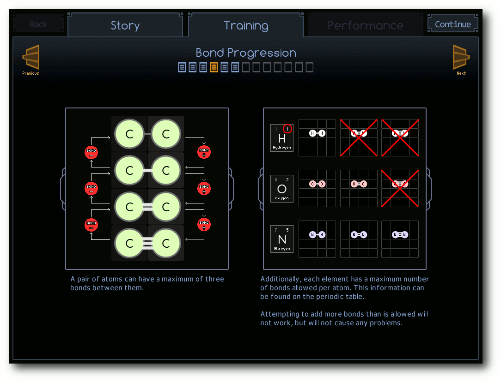Im Training erfährt man, wie chemische Prozesse funktionieren.
Wo ist Waldo?
Die ersten Objekte, denen man im Spiel begegnet, sind sogenannte Waldos. Diese runden Träger können sich an einzelne Atome oder ganze Moleküle binden und diese in einem Reaktor transportieren. Der Reaktor selbst hat zwei Eingänge, Alpha und Beta, und zwei Ausgänge, Psi und Omega. Über die Eingänge werden Atome oder ganze Moleküle angeliefert, die man am linken Bildrand sieht. Diese Anlieferungen müssen von den Waldos entgegengenommen und weiterverarbeitet werden. In der Regel ist es die Aufgabe des Spielers, die beiden angelieferten Elemente zu verbinden oder wieder aufzutrennen. 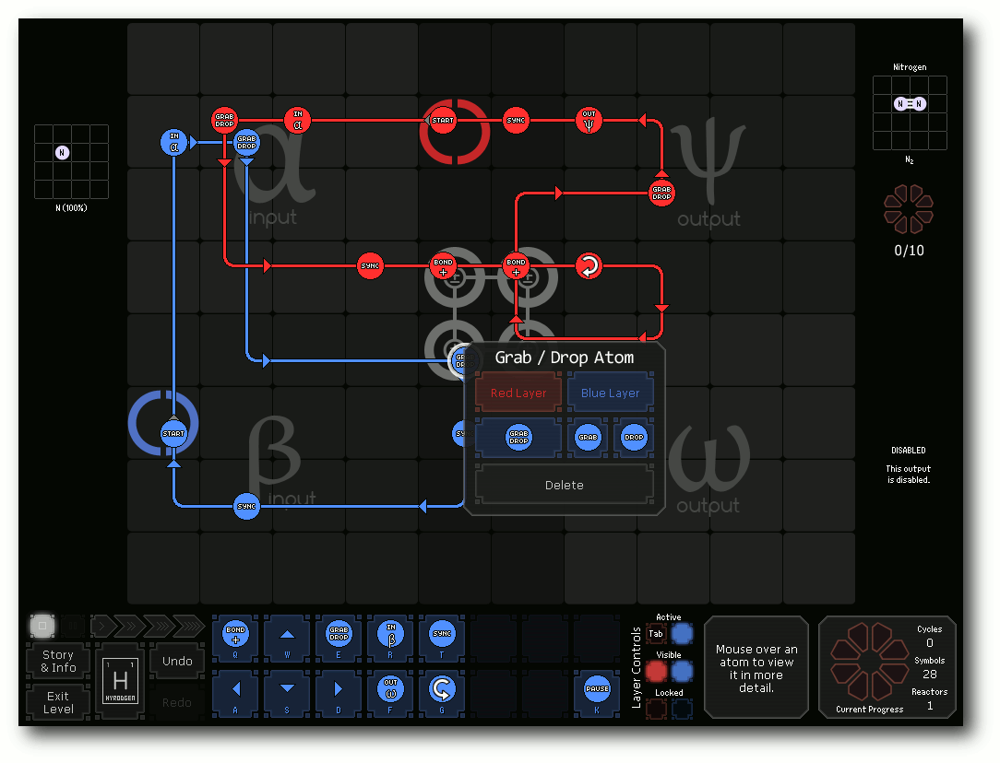Die Waldos können Atome greifen oder fallen lassen.
Pro Reaktor gibt es zwei Waldos: einen in Blau und einen in Rot. Deren Bahn kann durch Richtungspfeile beeinflusst werden, sodass diese quer durch den ganzen Reaktor laufen und sowohl die beiden Eingangs- als auch die beiden Ausgangsbereiche erreichen können. Zusätzlich kann man jede Bahn mit einfachen Befehlen versehen, die z. B. ein Eingangselement erzeugen, dieses greifen oder loslassen oder im Ausgangsbereich wieder aus dem Reaktor entlassen können. Wichtig sind bei diesen Aufgaben immer die chemischen Verbindungen zwischen den Elementen. So gibt es in der Mitte des Reaktors ein 2×2 großes Feld, auf dem man Verbindungen erzeugen oder auftrennen kann. Aber auch wenn die Waldos quer durch den Reaktor laufen können, sollte man vermeiden, dass beim Transport Atome aneinanderstoßen. Dies führt sofort zu einer chemischen Reaktion und lässt den Ablauf scheitern. 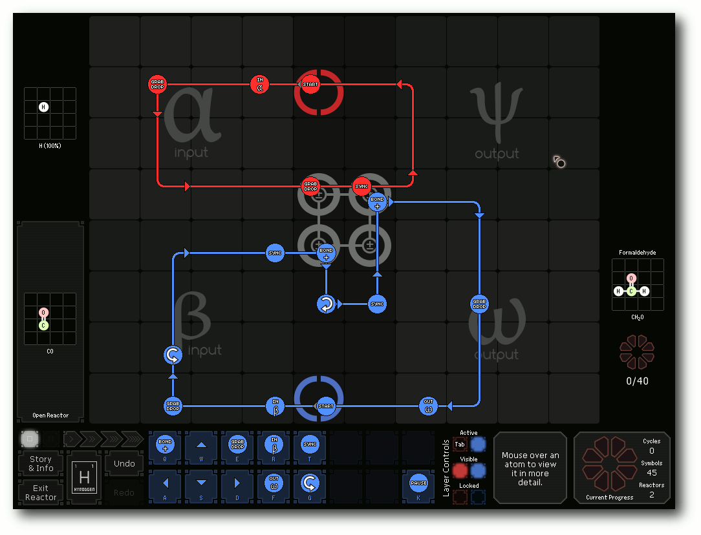
Formaldehyd zu produzieren ist eine der einfachen Aufgaben.
Benzol und Acetonitril
Natürlich lernt man beim Erzeugen der Moleküle und Verbindung auch etwas über Chemie, merken kann man sich die ganzen Bezeichnungen und vor allem den chemischen Aufbau aber sicherlich nicht. Glücklicherweise ist es aber auch nicht wichtig, zu wissen, dass die chemische Formel für Acetonitril CH3CN ist. Man muss anhand des aufgemalten Moleküls nur wissen, dass man drei H-Atome (Wasserstoff), zwei C-Atome (Kohlstoff) und ein N-Atom (Stickstoff) benötigt und wie viele Verbindungen es zwischen diesen jeweils gibt. Wer dennoch etwas mehr über die Elemente lernen will, findet links unten ein klickbares „H“, welches einen zum Periodensystem der Elemente führt. Bewegt man die Maus über ein Element, lernt man dessen Namen, die zugehörige Abkürzung, die Atomzahl und – was für das Spiel am wichtigsten ist – die Anzahl der Verbindungen, die das Element mit anderen Elementen eingehen kann, kennen. 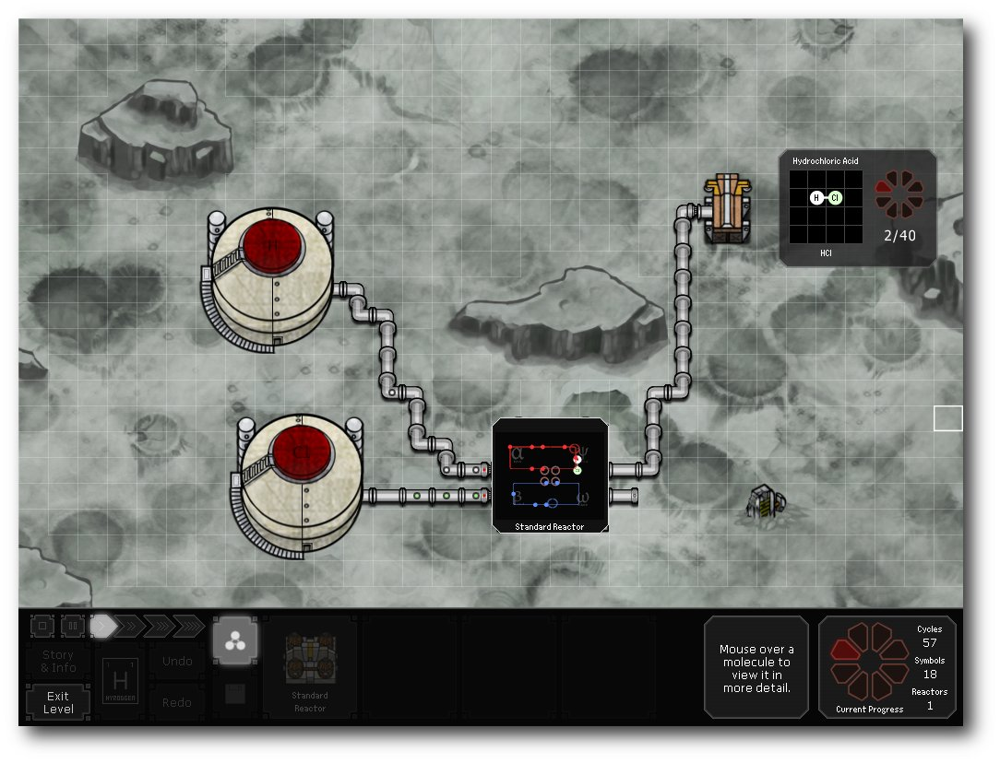Der Reaktor produziert fleißig Chlorwasserstoff.
Kettenreaktion
In den einzelnen Levels gibt es verschiedene Aufgaben zu erledigen. Am Anfang steht meist die Forschung („Research“), bei der man das Innere eines Reaktors kontrollieren, d. h. die Waldos steuern muss. Später tritt man dann aber auch in die Produktionsphase („Production“) ein. Hier gilt es, die Ausgabe von einem oder mehreren Vorratsbehältern, die Elemente speichern können, in einen Reaktor zu leiten, der dann wiederum die Ausgabe an ein Frachtschiff weitergibt. Die Verbindung zwischen diesen Stationen geschieht durch Röhren, indem man den mit einem Plus markierten Ausgang eines Objekts mit der Maus anfasst und dann bis zum Ziel einen Weg zieht. Die Pipelines dürfen sich auch kreuzen. Wenn die Verbindung steht, gilt es noch, den Reaktor zu kontrollieren. Durch Doppelklick auf den Reaktor landet man in diesem und kann, wie gewohnt, die Waldos steuern, um die vom Frachtschiff gewünschte Fracht zu erzeugen. Das Frachtschiff gibt dabei, wenn man mit der Maus darüber fährt, zusätzlich an, wie viele Elemente es benötigt und ob diese in einer speziellen Form oder Ausrichtung vorliegen müssen. 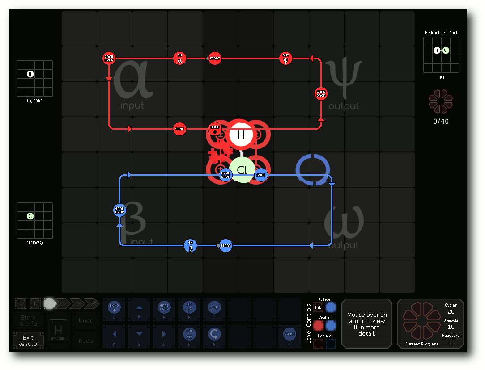Zwei Atome gehen eine Verbindung ein.
Atomare Installation
Das Spiel bzw. die kostenlose Demo wurde von Zachtronics Industries entwickelt und steht auf deren Webseite (bei der Vollversion natürlich erst nach dem Kauf) zum Download bereit [2]. Beides gibt es für Windows (auch über Steam), Mac OS 10 (ab 10.5), Ubuntu (ab 10.04) und andere Linux-Distributionen (als Archiv). Dabei haben die Entwickler sogar an eine eigene Version für 64-Bit-Systeme gedacht. Über das Deb-Paket installiert sich die Demo automatisch nach /opt/zachtronicsindustries/spacechem-demo. Wer das Archiv bzw. das Deb-Paket lieber selbst entpacken will, kann dies natürlich tun, für die Ausführung von SpaceChem werden aber einige SDL-Pakete sowie Mono vorausgesetzt, die man zuvor installieren muss. Die Anleitung auf der Webseite ist dabei aber vorbildlich und erklärt auch die manuelle Installation recht verständlich. 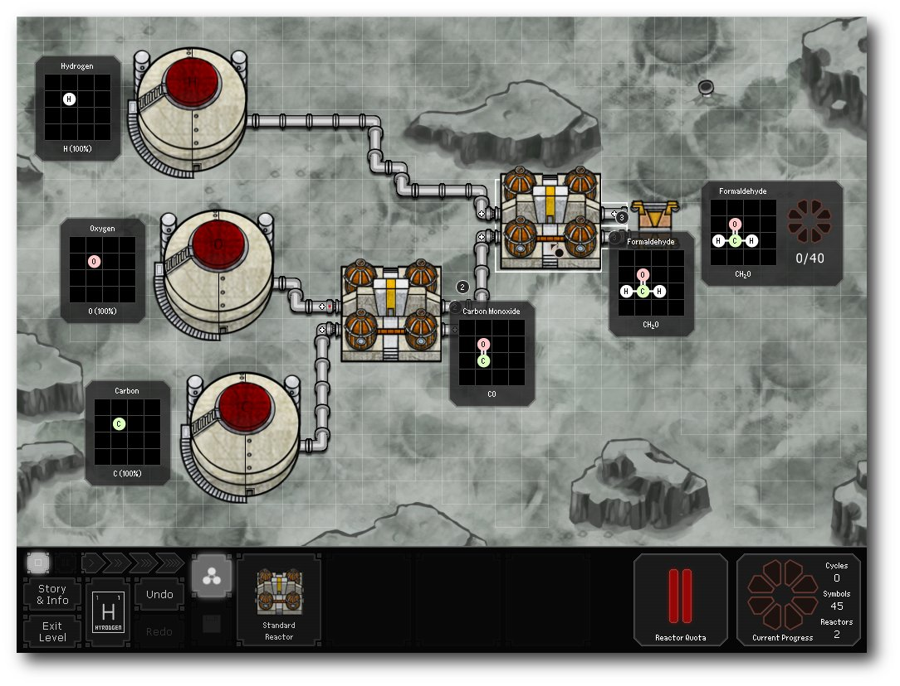C plus 2 H plus O ergibt Formaldehyd.
Atome der Welt: Vereinigt Euch!
SpaceChem als Lernspiel zu bezeichnen, wäre etwas übertrieben, dennoch wird versucht, spielerisch die chemischen Prozesse begreifbar zu machen, ohne dass man es merkt. Der spielerische Reiz liegt dabei natürlich im Finden einer Lösung, um das Frachtschiff entsprechend zu bedienen. Danach überlegt man aber manchmal trotzdem weiter, wie man die Produktionskette noch optimieren könnte. So wird zu jedem Level gespeichert, wie viele Durchläufe („Elapsed Cycles“), wie viele Reaktoren und wie viele Befehle („Symbols“) benutzt wurden. Neben dem Vergleich mit anderen „Entwicklern“ will man aber vor allem sein eigenes Ergebnis immer noch etwas verbessern. Daneben gibt es noch eine Liste mit Errungenschaften („Achievements“), die man im Spiel erreichen kann und die dazu anregen sollen, sich besonders anzustrengen. 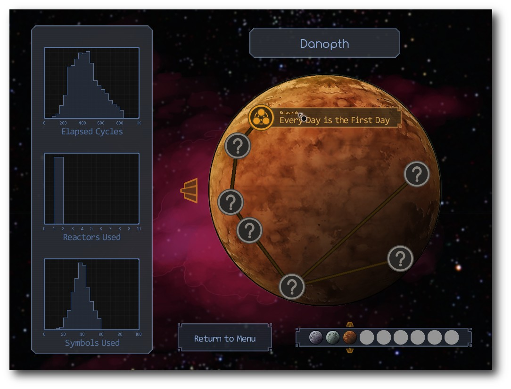Pro Planet gibt es einige Level zu absolvieren.
Die Knobelei macht sehr viel Spaß und da es keinerlei Zeitdruck gibt, kann man sich in Ruhe jeder Aufgabe widmen. Die im Hintergrund laufende Musik von Evan Le Ny unterhält einen dabei sehr angenehm und klingt schon fast wie die Komposition aus einem Hollywoodfilm. Wer will, kann sich diese sogar einfach so anhören, da die Titel im OGG-Format im Ordner /opt/zachtronicsindustries/spacechem-demo/music bzw. im Archiv einzeln zu finden sind. Die Vollversion von SpaceChem selbst kostet 15 Euro und bietet vermutlich neun Planeten mit je sechs oder mehr Aufgaben. Da nur die Demo zum Test vorlag bzw. das Ende der Demo noch nicht erreicht wurde, kann das nicht genau gesagt werden; laut Webseite sind es aber über fünfzig Level. Für den Preis erhält man einige Stunden Knobel- und Spielspaß, der sich auch für die kurze Pause zwischendurch lohnt. Als „Bonus“ kann man das gekaufte Spiel dann auch unter jedem seiner Betriebssysteme installieren und ist nicht zwingend an ein System gebunden. DRM gibt es keines und die Bezahlung kann über PayPal oder Kreditkarte abgewickelt werden. Schade ist eigentlich nur, dass es noch keine deutsche Übersetzung gibt, denn vor allem bei der Einleitung ist es hilfreich, wenn man versteht, was der Computer einem gerade erklären will. Links
[1] http://www.spacechemthegame.com/
[2] http://store.zachtronicsindustries.com/product/spacechem
| Autoreninformation |
| Dominik Wagenführ (Webseite) spielt sehr gerne Knobelspiele und freut sich über jede native Umsetzung, die unter Linux erscheint. |
Zum Index
Rezension: Durchstarten mit HTML5
von Hans-Joachim Baader Die wichtigsten Browser auf dem Markt bieten neue ominöse Funktionalitäten an, die deutlich über das bisherige HTML4 hinausgehen. Diese gehören zu dem, was unter dem Namen HTML5 als Standardentwurf vorliegt. Was vorhanden ist, kann aber heute schon genutzt werden. Redaktioneller Hinweis: „Durchstarten mit HTML5“ erschien erstmals bei Pro-Linux [1].Vorwort
Immer mehr ist von HTML5 als Nachfolger von HTML4 die Rede. Bekanntlich wird die Standardisierung von HTML5 erst in einigen Jahren abgeschlossen sein. Warum sollten sich Web-Entwickler also jetzt schon damit auseinandersetzen? Die Antwort ist klar: Weil die Entwicklung von HTML schon immer der Standardisierung vorausgeeilt ist. In der Erkenntnis, dass es unmöglich ist, einen HTML5-Standard durch ein Gremium zu diktieren, hat die WHATWG HTML5 zum „lebenden“ Standard [2] erklärt. Letztendlich definiert der Standard im Nachhinein das, was die Browser-Hersteller implementieren. Daraus folgt, dass Web-Entwickler HTML5 ab sofort nutzen können. Sie müssen allerdings immer berücksichtigen, dass nicht jeder Browser jedes Feature implementiert hat, und dass sich das mit jeder Version ändern kann. Folglich muss die Verfügbarkeit eines Features immer abgefragt werden, und für ältere Browser müssen Alternativen bereitgestellt werden. Von Mark Pilgrim stammt das, im O'Reilly-Verlag erschienene, Buch „Durchstarten mit HTML5”. Er ist für seinen Arbeitgeber Google im HTML5-Standardisierungskomitee aktiv. Auch als Autor mehrerer Bücher ist er mittlerweile in Erscheinung getreten. Sein neuestes Werk erschien bereits 2010 unter dem Originaltitel „Dive into HTML5” in den USA. Nach Pilgrims eigenen Angaben [3] verkaufte sich das Buch so gut, dass es schon nach kurzer Zeit die Produktionskosten hereingeholt hatte. Für ein Buch, das in voller Länge unter einer wirklich freien Lizenz online bereitsteht [4], ist das bemerkenswert.Das Buch
„Durchstarten mit HTML5“ besteht aus zehn Kapiteln. Jedes Kapitel ist mit durchschnittlich 20 Seiten vergleichsweise kurz. Kapitel 1 „Wie wir an diesen Punkt gelangt sind” betont, wie wichtig MIME-Typen für HTML einschließlich HTML5 sind und versucht mit Abschnitten wie „Alles, was Sie über XHTML wissen, ist falsch“ zu punkten. Kapitel 2 „HTML5-Funktionen“ widmet sich der Erkennung der, von den Browsern bereitgestellten, Features von HTML5 und präsentiert eine kleine JavaScript-Bibliothek, die das erleichtern kann. Ihr Einsatz ist nicht unbedingt nötig, da die jeweiligen Abfragen ohnehin sehr simpel sind (meistens Einzeiler). Kapitel 3 „Was all das bedeutet“ erläutert die neuen semantischen Tags von HTML5. Das nächste Kapitel „Zeichenstunde“ ist nur einem einzigen Tag gewidmet, dem canvas-Element. Um dieses zu nutzen, muss man auf die zugehörige JavaScript-API zugreifen. Zwei weitere neue Elemente sind audio und video. Um diese geht es im Kapitel 5 „Video im Web“. Dieses erläutert aber viel mehr die Grundlagen bzw. das derzeitige Durcheinander bei Videos im Web als die eigentlichen Tags. Das mag daran liegen, dass es zu den Tags nicht so viel zu sagen gibt. Stattdessen beschreibt der Autor auch die Kodierung von Ogg Theora-, H.264- und WebM-Videos und zeigt zum Schluss, wie man diese in einem Video-Tag zusammen mit Flash als Alternative kombiniert, so dass alle Browser abgedeckt sind. Die umfangreiche JavaScript-API der audio- und video-Tags wird dagegen gar nicht erwähnt. Die folgenden drei Kapitel beschäftigen sich ausschließlich mit neuen JavaScript-APIs, die ebenfalls zu HTML5 gerechnet werden. Die neue Geolocation-API ist Gegenstand von Kapitel 6 „Sie befinden sich hier (alle anderen auch)“. Es weist auf die Möglichkeiten, aber auch auf die möglichen Datenschutzprobleme hin, und wie die Browser das behandeln können. Kapitel 7 „Lokaler Speicher für Webanwendungen – gestern, heute und morgen“ ist eine kleine Tour durch die Geschichte von lokalen Speichermöglichkeiten für Anwendungen. Der in HTML5 kommende Speicher besteht nur aus Schlüssel- und Wert-Paaren. Über die Sicherheit dieser APIs sagt der Autor leider nichts; immerhin werden die Daten nicht zu Web-Servern übertragen (außer explizit durch JavaScript-Code). Über diesen einfachen Speicher hinaus sind weitere Methoden im Gespräch, bis hin zu SQL-Schnittstellen. Mozilla hat allerdings bereits erklärt, dieses „Web SQL“ nie zu unterstützen. Vielleicht einigen sich die Hersteller in Zukunft auf eine Objektdatenbank („Indexed-DB“); das ist allerdings noch Zukunft. Kapitel 8 „Gehen wir offline“ beschreibt Offline-Anwendungen. Anwendungen, die auch ausführbar bleiben wollen, wenn sie mit keinem Server verbunden sind, müssen zum einen deklarieren, welche Dateien der Browser vorab laden soll. Zum anderen müssen sie geänderte Daten zwischenspeichern (wozu der in Kapitel 7 angesprochene lokale Speicher herhalten muss) und später mit dem Server synchronisieren. In Kapitel 9 „Formularwahn“ geht es zurück zu Markup, hier kann man gegenüber dem alten HTML sogar JavaScript-Code einsparen, da es eine Menge neuer Formularfeldtypen gibt. Das Buch schließt mit Kapitel 10 „Mehr Semantik fürs Web“, in dem die sogenannten Mikrodaten vorgestellt werden. Es geht darum, dem Markup semantische Informationen hinzuzufügen, die sich mit HTML5 nicht ausdrücken lassen. Hierzu gab es bereits konkurrierende Entwürfe von Mikroformaten [5] und RDFa [6]. HTML5 geht mit Mikrodaten [7] einen eigenen Weg, jedoch können offenbar die Definitionen von microformats.org genutzt werden. Diese sind informell beschrieben. Hier wäre noch interessant gewesen, ob eine automatisierte Bearbeitung in allgemeiner Form durch Browser und Web-Clients möglich ist. Wahrscheinlich ist das nicht der Fall und die Information kann nur genutzt werden, wenn das Wissen über das Format in die Software einprogrammiert ist.Fazit
„Durchstarten mit HTML5“ ist vor allem für Leute geeignet, die eine kurze, schnell zu überfliegende Übersicht über HTML5 wollen. Wer eine Referenz sucht, dürfte mit „HTML5 – Webseiten innovativ und zukunftssicher” [8] eher glücklich werden, das gut den doppelten Umfang aufweist und die neuen APIs viel vollständiger darstellt. Zum Schmökern ist vor allem die englischsprachige Version ein Genuss, dazu tragen auch die doppeldeutigen Titel und der lockere Stil bei. Etwas störend ist hierbei, dass bestimmte Passagen öfter fast wörtlich wiederholt werden, unter anderem in Kapitel 2. Diese hätten durchaus mit Verweis auf frühere Absätze vermieden werden können. Der deutschen Übersetzung merkt man an, dass es eine Übersetzung ist – einige Passagen hätte ein deutscher Autor wohl anders formuliert, aber insgesamt ist sie gelungen. Wer sich nicht daran stört, dass „Durchstarten mit HTML5“ keine vollständige Darstellung von HTML5 ist, was aber vor der Fertigstellung des Standards auch kaum möglich ist, dem sei dieses Buch empfohlen. Weniger kann schließlich auch einmal mehr sein.| Buchinformationen | |
| Titel | Durchstarten mit HTML5 |
| Autor | Mark Pilgrim |
| Verlag | O'Reilly, 2011 |
| Umfang | 232 Seiten |
| ISBN | 978-3-89721-571-9 |
| Preis | 29,90 EUR |
[1] http://www.pro-linux.de/artikel/2/1491/durchstarten-mit-html5.html
[2] http://www.pro-linux.de/news/1/16625/aus-html5-wird-html.html
[3] http://diveintomark.org/archives/2011/01/09/dive-into-2010
[4] http://diveintohtml5.org/
[5] http://microformats.org/
[6] http://www.w3.org/TR/rdfa-syntax/
[7] http://www.whatwg.org/specs/web-apps/current-work/multipage/links.html#microdata
[8] http://www.pro-linux.de/artikel/2/1454/html5-webseiten-innovativ-und-zukunftssicher.html
| Autoreninformation |
| Hans-Joachim Baader (Webseite) befasst sich seit 1993 mit Linux. 1994 schloss er sein Informatikstudium erfolgreich ab, machte die Softwareentwicklung zum Beruf und ist einer der Betreiber von Pro-Linux.de. |
Zum Index
Rezension: Essential SQLAlchemy
von Jochen Schnelle SQLAlchemy [1] ist eine universelle Schnittstelle für Python zu relationalen Datenbanken wie z. B. MySQL [2], SQLite [3] oder PostgreSQL [4]. Es ist extrem mächtig und entsprechend umfangreich. Das Buch hat zum Ziel, Programmierern die Nutzung von SQLAlchemy näher zu bringen. Dabei will es sich gleichermaßen an Neueinsteiger als auch an fortgeschrittene Programmierer richten. Hält man das Buch in den Händen, so fällt auf, dass es nicht gerade umfangreich ist. Es umfasst rund 200 Seiten, das Format ist etwas größer als A5. Da drängt sich die Frage auf, welche Vorteile das Buch gegenüber der offiziellen Dokumentation [5] haben könnte. Diese ist mit rund 180 gedruckten A4-Seiten ähnlich umfangreich, allerdings ist davon etwas mehr als die Hälfte die API-Referenz. Nichtsdestotrotz ist die Dokumentation frei verfügbar, unter anderem auch in einer druckfreundlichen PDF-Variante. Im direkten Vergleich wählt der Autor von „Essential SQLAlchemy“, Rick Copeland, jedoch eine andere Strukturierung als die Dokumentation. Das Buch beginnt mit einer rund zwanzigseitigen allgemeinen Einführung zu SQLAlchemy, gefolgt von einem weiteren zwanzigseitigen Tutorial, welches geschickt im Schnelldurchgang den ORM (Object Relational Mapper [6]), eine der Kernkomponenten des Programms, erläutert. Die folgenden sechs Kapitel bauen dann systematisch aufeinander auf, beginnend bei der Datenbankanbindung über Datentypen und Datenbankoperationen hin zur detaillierten Beschreibung des ORM, inklusive fortgeschrittener Themen wie Objektvererbung auf ORM-Ebene. Die letzten drei Kapitel beschreiben in SQLAlchemy enthaltene Erweiterungen wie z. B. SQLSoup [7] sowie die Erweiterung Elexir [8], welche nicht direkter Bestandteil von SQLAlchemy ist. Der Aufbau jedes Kapitels ist ähnlich: Es beginnt mit ein paar einfachen Beispielen bzw. einer Einführung in die grundlegenden Befehle, im Laufe des Kapitels werden die Fälle immer komplexer bzw. zeigen viele Nuancen der Möglichkeiten von SQLAlchemy auf. Dabei ist der Kapitelbeginn durchweg einsteigerfreundlich, d. h. auch ohne Vorwissen zum Programm kann man alle Beispiele nachvollziehen. Wird der Text aber im Laufe des Kapitels zu komplex oder geht über das hinaus, was man für die eigene Anwendung braucht, so kann man ohne Weiteres den Rest des Kapitels überspringen und mit Beginn des nächsten Kapitels zum nächsten Thema ohne Verständnisprobleme weitermachen. Dies ist besonders für Einsteiger gut, da sie sich nicht unbedingt durch das komplette Kapitel „quälen“ müssen, nur um im nächsten Abschnitt weiterlesen zu können. Fortgeschrittene Nutzer hingegen können den Anfang eines Kapitels schnell durchlesen und finden dann zum Ende hin interessante Tipps und Tricks zur tiefergehenden Nutzung von SQLAlchemy. Weiterhin ist positiv anzumerken, dass der Autor des Buchs durchgehend das gleiche Beispiel verwendet, um die Nutzung von SQLAlchemy zu erklären. Dabei wird das Beispiel je nach Notwendigkeit des zu erläuternden Inhalts erweitert oder reduziert bzw. komplexer oder einfacher gestaltet. Lediglich bei der Benennung der Spalten in der Beispieldatenbank hätte der Autor etwas mehr Rücksicht auf die internationale Leserschaft nehmen können. So dürfe den wenigsten Leser ohne Suchen im Internet geläufig sein, dass „msrp“ für „Manufacturer's suggested retail price“ und „sku“ für „stock keeping unit“ steht. Wie bereits erwähnt, werden in den letzten Kapiteln zwei Erweiterungen für SQLAlchemy erklärt, Elexir und SqlSoup. Beide können – je nach Anwendungsfall – durchaus Vorteile gegenüber SQLAlchemy haben. Besonders positiv ist zu erwähnen, dass das Buch die Vorteile und auch Nachteile von Elexir und SqlSoup gegenüber SQLAlchemy abschließend stichpunktartig auflistet, sodass dem Leser hier eine gute und kompakte Entscheidungshilfe gegeben wird. Auch wenn das, wie mehrfach erwähnt, durchaus einsteigerfreundlich ist, so sollte man doch zumindest grundlegende Pythonkenntnisse sowie Grundwissen im Umgang mit relationalen Datenbanken und SQL haben, um den Inhalt des Buchs verstehen zu können. Der Autor pflegt einen kompakten Schreibstil, nichtsdestotrotz hat man beim Lesen stets das Gefühl, vollständig informiert zu sein und alles Wichtige zu wissen. Das Englisch des Buches ist durchweg verständlich, die eigenen Kenntnisse der Sprache sollte aber schon etwas über Schulenglisch hinaus gehen. Etwas nachteilig ist, dass das Buch sich noch auf die Version 0.4 von SQLAlchemy bezieht. Viele Linux-Distributionen haben die Version 0.5 in den Paketquellen, auf der Homepage steht auch Version 0.6 bereit. Für Einsteiger ist dies zwar relativ gleich, da grundlegende Dinge der API gleich geblieben sind, fortgeschrittene Befehle und Möglichkeiten haben sich jedoch in (wenn auch kleinen) Teilen geändert. Um auf die Eingangs gestellte Frage zurück zu kommen: Hat das Buch Vorteile gegenüber der offiziellen Dokumentation? Hier lautet die Antwort: Grundsätzlich ja, insbesondere aufgrund des systematischen Aufbaus, der konsistenten Verwendung des gleichen Beispiels über das ganze Buch hinweg und der Tauglichkeit sowohl für Einsteiger als auch fortgeschrittene Nutzer. Wer sich also für SQLAlchemy interessiert bzw. plant, es für sein Python-Projekt zu nutzen, der sollte durchaus einen Blick auf das Buch werfen.| Buchinformationen | |
| Titel | Essential SQLAlchemy |
| Autor | Rick Copeland |
| Verlag | O'Reilly |
| Umfang | 215 Seiten |
| ISBN | 978-0596516147 |
| Preis | ca. 27 Euro |
[1] http://www.sqlalchemy.org/
[2] http://www.mysql.de/
[3] http://www.sqlite.org/
[4] http://www.postgresql.de/
[5] http://www.sqlalchemy.org/docs/
[6] http://de.wikipedia.org/wiki/Objektrelationale_Abbildung
[7] http://www.sqlalchemy.org/docs/orm/extensions/sqlsoup.html
[8] http://elixir.ematia.de/trac/wiki
| Autoreninformation |
| Jochen Schnelle setzt Python und eine relationale Datenbank für diverse Intranetprojekte ein. Das Buch hat ihm geholfen, die Programme von reinen SQL-Abfragen auf SQLAlchemy umzustellen. |
Zum Index
Veranstaltungskalender
| Messen | ||||
| Veranstaltung | Ort | Datum | Eintritt | Link |
| Grazer Linuxtage | Graz | 09.04.2011 | frei | http://linuxwochen.at/ |
| UnFUCK | Furtwangen | 15.-17.04.2011 | frei | http://www.unfuck.eu/ |
| Linuxwochen Wien | Wien | 05.-07.05.2011 | frei | http://linuxwochen.at/ |
| LinuxTag | Berlin | 11.-14.05.2011 | 18 EUR | http://www.linuxtag.org/ |
| LiWoLi 2011 | Linz | 12.-14.05.2011 | frei | http://linuxwochen.at/ |
| Edu Days | Krems | 16.-18.05.2011 | frei | http://www.edudays.at/ |
| Linuxwochen Eisenstadt | Eisenstadt | 20.-21.05.2011 | frei | http://linuxwochen.at/ |
| LUG Camp | Tschierv | 02.-05.06.2011 | - | http://2011.lug-camp.ch/ |
| GPN11 | Karlsruhe | 23.-26.06.2011 | - | https://entropia.de/GPN11 |
Vorschau
freiesMagazin erscheint immer am ersten Sonntag eines Monats. Die Mai-Ausgabe wird voraussichtlich am 1. Mai unter anderem mit folgenden Themen veröffentlicht:- Ryzom – Das freie MMORPG
- Parallelisierung mit Scala
Zum Index
Konventionen
An einigen Stellen benutzen wir Sonderzeichen mit einer bestimmten Bedeutung. Diese sind hier zusammengefasst:| $: | Shell-Prompt |
| #: | Prompt einer Root-Shell – Ubuntu-Nutzer können hier auch einfach in einer normalen Shell ein sudo vor die Befehle setzen. |
| ~: | Abkürzung für das eigene Benutzerverzeichnis /home/BENUTZERNAME |
Zum Index
Impressum ISSN 1867-7991 | ||
| freiesMagazin erscheint als PDF und HTML einmal monatlich. | ||
| Kontakt | ||
| Postanschrift | freiesMagazin | |
| c/o Dominik Wagenführ | ||
| Beethovenstr. 9/1 | ||
| 71277 Rutesheim | ||
| Webpräsenz | http://www.freiesmagazin.de/ | |
| Autoren dieser Ausgabe | ||
| Hans-Joachim Baader | Debian GNU/Linux 6.0 „Squeeze“, Rezension: Durchstarten mit HTML5 | |
| Clemens Hackenberg | Eine Einführung in die Programmiersprache Pike | |
| Mathias Menzer | Der März im Kernelrückblick | |
| Jochen Schnelle | Rezension: Essential SQLAlchemy | |
| Dominik Wagenführ | Test: OpenDocument-Format für den Datenaustausch, SpaceChem – Atome im Weltall | |
| Erscheinungsdatum: 3. April 2011 | ||
| Redaktion | ||
| Frank Brungräber | Thorsten Schmidt | |
| Dominik Wagenführ (Verantwortlicher Redakteur) | ||
| Satz und Layout | ||
| Ralf Damaschke | Yannic Haupenthal | |
| Nico Maikowski | Matthias Sitte | |
| Korrektur | ||
| Daniel Braun | Stefan Fangmeier | |
| Mathias Menzer | Karsten Schuldt | |
| Stephan Walter | ||
| Veranstaltungen | ||
| Ronny Fischer | ||
| Logo-Design | ||
| Arne Weinberg (GNU FDL) | ||
Soweit nicht anders angegeben, stehen alle Artikel, Beiträge und Bilder in freiesMagazin unter der Creative-Commons-Lizenz CC-BY-SA 3.0 Unported. Das Copyright liegt beim jeweiligen Autor. freiesMagazin unterliegt als Gesamtwerk ebenso der Creative-Commons-Lizenz CC-BY-SA 3.0 Unported mit Ausnahme der Inhalte, die unter einer anderen Lizenz hierin veröffentlicht werden. Das Copyright liegt bei Dominik Wagenführ. Es wird erlaubt, das Werk/die Werke unter den Bestimmungen der Creative-Commons-Lizenz zu kopieren, zu verteilen und/oder zu modifizieren. Das freiesMagazin-Logo wurde von Arne Weinberg erstellt und unterliegt der GFDL. Die xkcd-Comics stehen separat unter der Creative-Commons-Lizenz CC-BY-NC 2.5 Generic. Das Copyright liegt bei Randall Munroe.
Zum Index
File translated from TEX by TTH, version 3.89.
On 4 Apr 2011, 17:31.